<!doctype html>
<html lang="en">
<head>
  <meta charset="utf-8">
  <meta name="viewport" content="width=device-width, initial-scale=1">
  <title>arxiv digest — 2026-06-15</title>
  <style>
:root {
  --bg: #ffffff;
  --fg: #1f2328;
  --muted: #59636e;
  --border: #d0d7de;
  --card: #f6f8fa;
  --link: #0969da;
}
body {
  max-width: 980px;
  margin: 0 auto;
  padding: 2rem 1rem 5rem;
  font-family: -apple-system, BlinkMacSystemFont, "Segoe UI", Helvetica, Arial, sans-serif;
  line-height: 1.55;
  color: var(--fg);
  background: var(--bg);
}
a { color: var(--link); }
img { max-width: 100%; height: auto; }
pre, code { background: var(--card); border-radius: 6px; }
pre { padding: 1rem; overflow-x: auto; }
blockquote { border-left: 4px solid var(--border); padding-left: 1rem; color: var(--muted); }
details { margin: 0.6rem 0; }
summary { cursor: pointer; font-weight: 600; }
.paper-figures-scroll {
  display: flex;
  gap: 1rem;
  overflow-x: auto;
  overscroll-behavior-x: contain;
  padding: 0.75rem 0.25rem 1rem;
  margin: 1rem 0 1.25rem;
  border-top: 1px solid var(--border);
  border-bottom: 1px solid var(--border);
  scroll-snap-type: x proximity;
}
.paper-figure-card {
  flex: 0 0 min(260px, 72vw);
  scroll-snap-align: start;
  background: var(--card);
  border: 1px solid var(--border);
  border-radius: 12px;
  padding: 0.55rem;
}
.paper-figure-card img {
  display: block;
  width: 100%;
  max-height: 240px;
  object-fit: contain;
  background: white;
  border-radius: 8px;
}
.paper-figure-caption {
  display: block;
  margin-top: 0.5rem;
  color: var(--muted);
  font-size: 0.85rem;
}
.figure-strip-hint {
  color: var(--muted);
  font-size: 0.9rem;
  margin-bottom: -0.3rem;
}
</style>
  <!-- MathJax: renders $...$ inline math and $$...$$ display math, plus
       \(...\) and \[...\]. Loaded from the official CDN; works offline
       once cached. Configured to skip code/pre blocks so arxiv IDs that
       look like dollar amounts don't get mangled. -->
  <script>
    window.MathJax = {
      tex: {
        inlineMath: [['$', '$'], ['\\(', '\\)']],
        displayMath: [['$$', '$$'], ['\\[', '\\]']],
        processEscapes: true,
        processEnvironments: true
      },
      options: {
        skipHtmlTags: ['script', 'noscript', 'style', 'textarea', 'pre', 'code'],
        ignoreHtmlClass: 'tex2jax_ignore',
        processHtmlClass: 'tex2jax_process'
      }
    };
  </script>
  <script id="MathJax-script" async
    src="https://cdn.jsdelivr.net/npm/mathjax@3/es5/tex-chtml.js"></script>
</head>
<body>
<header style="background-color: #333; color: white; padding: 15px; margin-bottom: 20px;">
  <h1 style="margin: 0; font-size: 24px;">
    <a href="https://ochelpan.github.io/arXiv_clean/" style="color: white; text-decoration: none;">Main</a>
  </h1>
</header>

<h1>Daily arXiv Report</h1>

<hr>
<p>
<a href="index.html">← Index</a>
 · <a href="papers_02.html">← Previous</a> · <a href="papers_04.html">Next →</a>
</p>
<hr>

<h2>Papers 41–60</h2>
<p><a id="paper-2606.14178"></a></p>
<h3 id="note-on-the-local-calculation-of-decoherence-of-quantum-superposition-in-the-static-black-holes"><a href="http://arxiv.org/abs/2606.14178v1">Note on the local calculation of decoherence of quantum superposition in the static black holes</a></h3>
<p><strong>Authors:</strong> Ran Li, Zhong-Xiao Man, Jin Wang<br>
<strong>Type:</strong> theory · <strong>Category:</strong> other · <strong>PDF:</strong> <a href="https://arxiv.org/pdf/2606.14178v1">https://arxiv.org/pdf/2606.14178v1</a><br>
<strong>Analysis basis:</strong> full PDF text, analyzed in chunks
<strong>Topic relevance:</strong> <code>Keldysh / 2PI / non-Gaussian methods</code> <strong>3/5</strong> · <code>correlated / nonlocal dissipation</code> <strong>2/5</strong> · <code>driven-dissipative phase transition</code> <strong>2/5</strong> · <code>entanglement &amp; information structure</code> <strong>2/5</strong> · <code>methods for driven-dissipative</code> <strong>1/5</strong> · <code>non-equilibrium dynamics</code> <strong>1/5</strong> · <code>non-equilibrium universality</code> <strong>1/5</strong></p>
<div class="figure-strip-hint">↔ Scroll figures horizontally</div>
<div class="paper-figures-scroll">
<figure class="paper-figure-card">
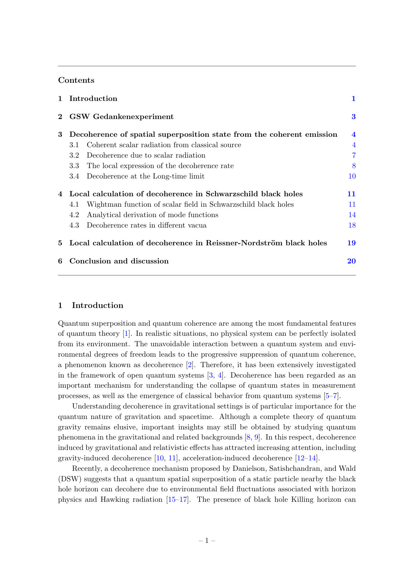
<figcaption class="paper-figure-caption"><b>Fig 1.</b> Low-resolution page preview, page 2</figcaption>
</figure>
<figure class="paper-figure-card">
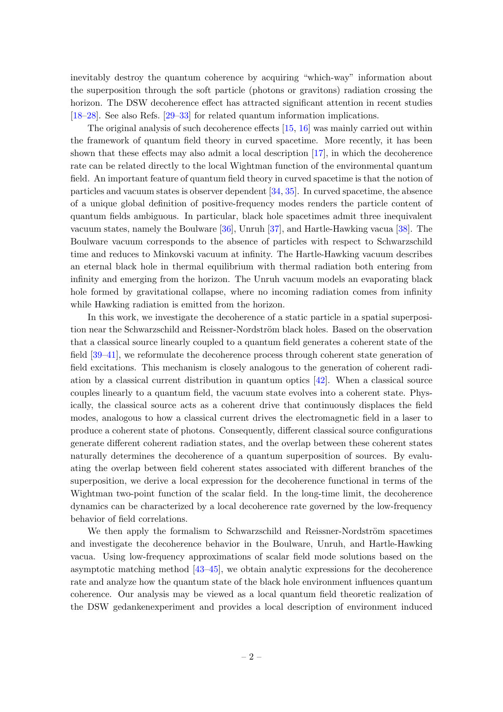
<figcaption class="paper-figure-caption"><b>Fig 2.</b> Low-resolution page preview, page 3</figcaption>
</figure>
<figure class="paper-figure-card">
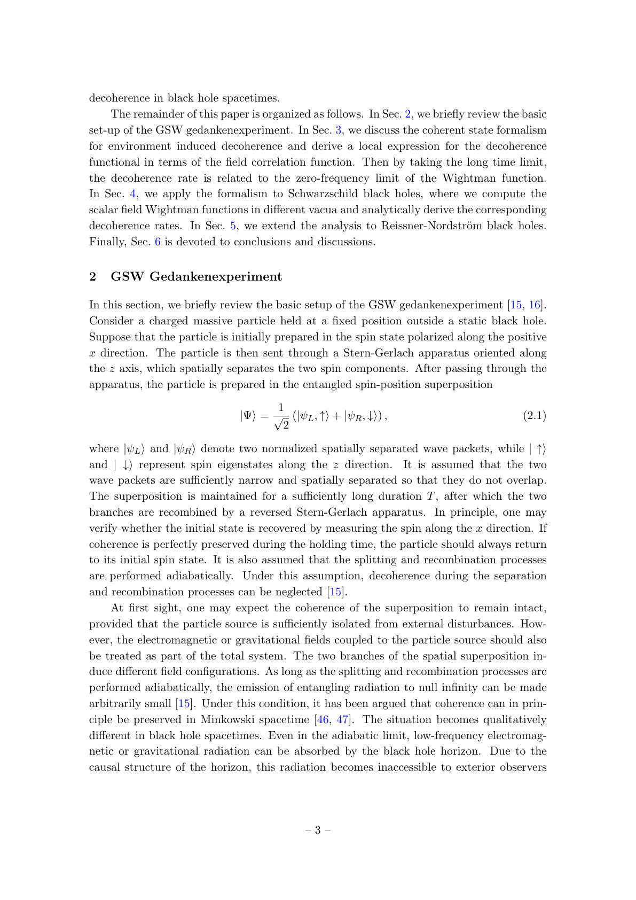
<figcaption class="paper-figure-caption"><b>Fig 3.</b> Low-resolution page preview, page 4</figcaption>
</figure>
<figure class="paper-figure-card">
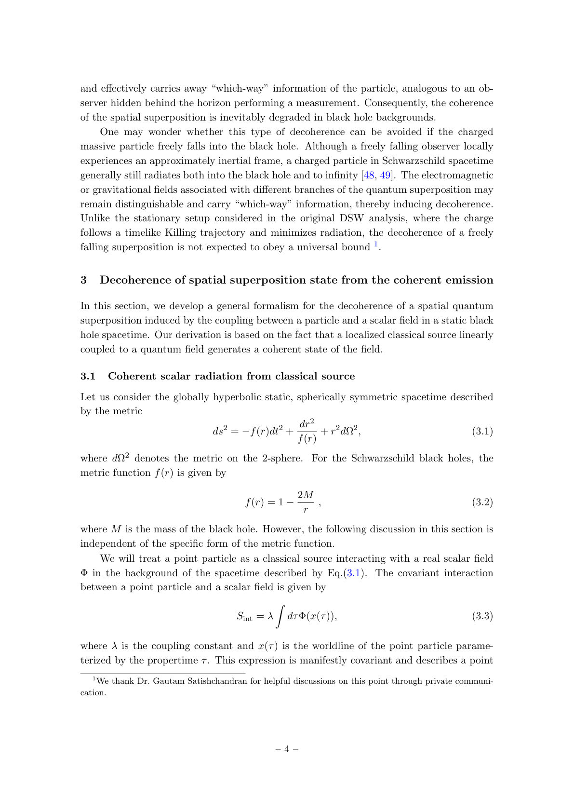
<figcaption class="paper-figure-caption"><b>Fig 4.</b> Low-resolution page preview, page 5</figcaption>
</figure>
<figure class="paper-figure-card">
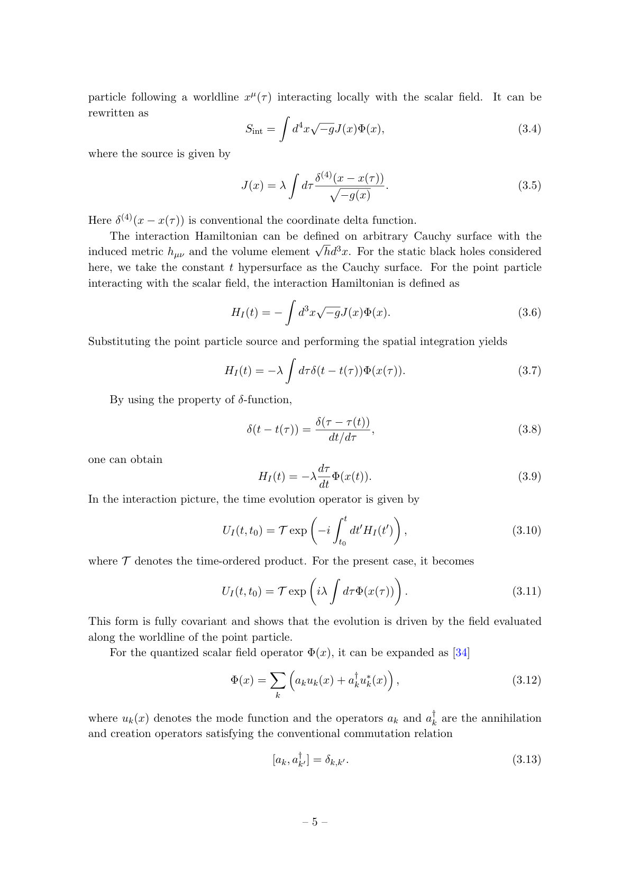
<figcaption class="paper-figure-caption"><b>Fig 5.</b> Low-resolution page preview, page 6</figcaption>
</figure>
</div>

<p><strong>Summary.</strong> This theoretical paper calculates the rate at which a quantum superposition decays due to coupling with a scalar field near black holes. By analyzing different vacuum states—Boulware, Unruh, and Hartle-Hawking—the authors show that only thermal effects associated with Hawking radiation induce measurable decoherence. This demonstrates the profound dependence of quantum coherence on the chosen description of the spacetime environment.</p>
<p><strong>Why it may be interesting.</strong> This work provides a concrete calculation of decoherence in curved spacetime environments, linking fundamental concepts like Hawking radiation and quantum field theory in curved spacetime directly to open quantum system dynamics (decoherence).</p>
<details>
<summary>Detailed structure</summary>
<p><strong>Main problem.</strong> The paper investigates how quantum spatial superpositions of a particle decohere when coupled to a quantum scalar field in the curved spacetime backgrounds of static black holes (Schwarzschild and Reissner-Nordström).</p>
<p><strong>Main result.</strong> Decoherence is found to vanish in the Boulware vacuum but is induced by thermal effects associated with Hawking radiation in Unruh and Hartle-Hawking vacua, yielding a non-zero rate even for extremal black holes.</p>
<p><strong>Method.</strong> The decoherence functional is derived locally using coherent state generation techniques, relating the rate to the low-frequency behavior of the Wightman function calculated via asymptotic matching methods.</p>
<p><strong>Model / system.</strong> The system models a quantum superposition of a static particle coupled to a real scalar field ($\Phi$) in curved spacetime. The analysis uses the interaction Hamiltonian derived from the coupling $S_{int} = \lambda \int d	au \Phi(x(	au))$.</p>
<p><strong>Key observables.</strong> Decoherence functional, entanglement particle number $\langle N 
angle$, and the decoherence rate ($\Gamma$).</p>
<p><strong>Important parameters / regimes.</strong> Black hole mass ($M$), charge ($Q$), coupling constant ($\lambda$), separation distance ($d$), and vacuum choice (Boulware, Unruh, Hartle-Hawking).</p>
<p><strong>Assumptions / limitations.</strong> The analysis relies on approximations such as treating the interaction profile as rectangular and using asymptotic matching methods for mode functions in different regimes.</p>
<p><strong>Paper structure.</strong> The paper reviews the DSW gedankenexperiment, develops the coherent state formalism and local rate expression, applies it to Schwarzschild black holes, extends the analysis to Reissner-Nordström black holes, and concludes by summarizing the vacuum dependence.</p>
</details>
<details>
<summary>Abstract</summary>
<p>We investigate the decoherence of a quantum spatial superposition of a static particle in Schwarzschild and Reissner-Nordström black holes. By treating the particle as a localized classical source coupled to a quantum scalar field, we reformulate the decoherence process in the Danielson-Satishchandran-Wald (DSW) gedankenexperiment through coherent state generation and derive the local expression for the decoherence functional in terms of the Wightman function. In the long-time limit, the decoherence rate is shown to be characterized by the low-frequency behavior of the Wightman function. We then employ the asymptotic matching method to calculate the analytical expressions of the Wightman functions in the Boulware, Unruh, and Hartle-Hawking vacua. We show that the decoherence behavior depends on the quantum state of the environmental field. While the Boulware vacuum gives vanishing decoherence for a static superposition, the thermal effects associated with Hawking radiation in the Unruh and Hartle-Hawking vacua can induce nonvanishing decoherence.</p>
</details>
<p><sub><a href="#top">↑ back to top</a></sub></p>

<p><a id="paper-2606.14661"></a></p>
<h3 id="percolation-of-a-rod-like-particle-in-a-static-bed-of-spheres-trapping-and-passing"><a href="http://arxiv.org/abs/2606.14661v1">Percolation of a rod-like particle in a static bed of spheres: trapping and passing</a></h3>
<p><strong>Authors:</strong> Juan C. Petit, Julio M. Ottino, Richard M. Lueptow, Paul B. Umbanhowar<br>
<strong>Type:</strong> theory · <strong>Category:</strong> statistical mechanics · <strong>PDF:</strong> <a href="https://arxiv.org/pdf/2606.14661v1">https://arxiv.org/pdf/2606.14661v1</a><br>
<strong>Analysis basis:</strong> full PDF text, analyzed in chunks
<strong>Topic relevance:</strong> <code>non-equilibrium dynamics</code> <strong>3/5</strong> · <code>non-equilibrium universality</code> <strong>3/5</strong> · <code>driven-dissipative phase transition</code> <strong>2/5</strong> · <code>methods for driven-dissipative</code> <strong>2/5</strong> · <code>Frenkel-Kontorova</code> <strong>1/5</strong> · <code>Keldysh / 2PI / non-Gaussian methods</code> <strong>1/5</strong></p>
<div class="figure-strip-hint">↔ Scroll figures horizontally</div>
<div class="paper-figures-scroll">
<figure class="paper-figure-card">
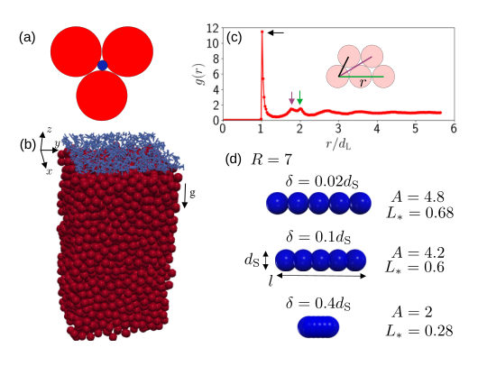
<figcaption class="paper-figure-caption"><b>Fig 1.</b> FIG. 1. (a) Triangular configuration of three contacting large spheres with diameter dL (red) defining the pore throat diam- eter dt (blue) associated with the geometric trapping limit, Rt. (b) Randomly packed bed of large spheres (ϕ = 0.60) with initial configuration of non-interacting rods (blue) at the top. (c) Radial distribution function, g(r), of the packed bed showing a disordered configuration beyond nearby particles for r &gt; 2dL. (d) Examples of rods with various aspect ratios, A = dL/dS, and length ratios, L∗= l/dL.</figcaption>
</figure>
<figure class="paper-figure-card">
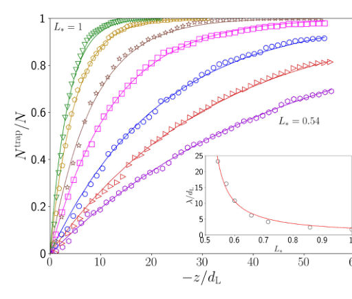
<figcaption class="paper-figure-caption"><b>Fig 2.</b> FIG. 2. Fraction of trapped rods, N trap/N, vs scaled depth, z/dL, for R = 7 and L∗∈{0.54, 0.57, 0.6, 0.65, 0.71, 0.86, 1}. Solid curves are fits to N trap/N = 1−exp(z/λ). Inset: Scaled characteristic bed penetration length, λ/dL, vs scaled rod length, L∗; solid curve is a fit to λ/dL = c/(L∗−Lc ∗), where Lc ∗≈0.52 is the critical trapping length and c ≈1.1.</figcaption>
</figure>
<figure class="paper-figure-card">
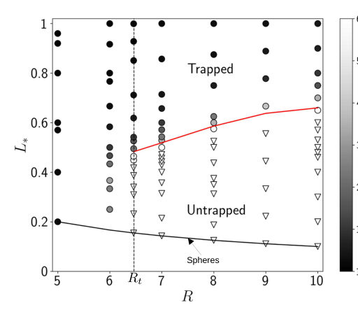
<figcaption class="paper-figure-caption"><b>Fig 3.</b> FIG. 3. Phase diagram of trapped and passing regimes vs rod length, L∗, and size ratio, R, in a disordered bed of spheri- cal particles with ϕ = 0.60. Downward triangles represent the continuous percolation regime while circles indicate the trapping regime, characterized by λ/dL (grayscale), which di- verges at the boundary between trapped and untrapped rods. Solid black and red lines denote, respectfully, the spherical limit (L∗= R−1) and the critical trapping length, Lc ∗, ex- tracted from fits to Eq. 2 (see inset in Fig. 2). The vertical dashed line indicates the minimum pore-throat-based geomet- ric trapping threshold at R = Rt = 6.464.</figcaption>
</figure>
<figure class="paper-figure-card">
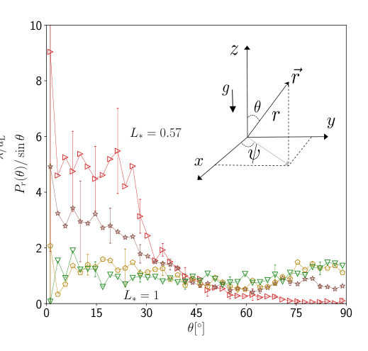
<figcaption class="paper-figure-caption"><b>Fig 4.</b> FIG. 4. Scaled polar density distributions of trapped rod ori- entation, Pr(θ)/ sin θ, vs polar angle, θ, at R = 7 and different L∗∈{0.57, 0.71, 0.86, 1}. Data are averaged over five inde- pendent simulations with different initial bed sphere packings and rods positions. Error bars indicate the standard devia- tion and are only plotted for selected data points to improve readability.</figcaption>
</figure>
<figure class="paper-figure-card">
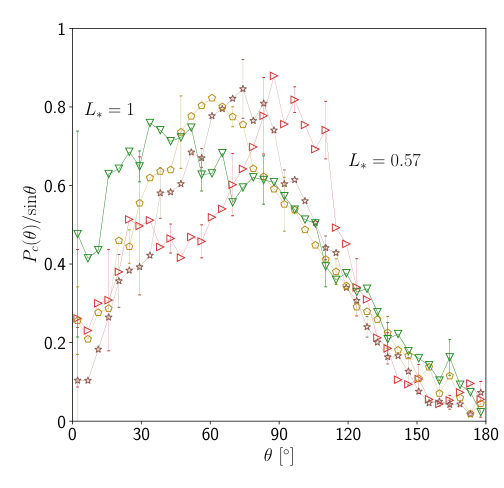
<figcaption class="paper-figure-caption"><b>Fig 5.</b> FIG. 5. Scaled polar density distributions of contact location, Pc(θ)/ sin θ, vs polar contact angle between trapped rods and bed spheres (R = 7) at different L∗∈{0.57, 0.71, 0.86, 1}. Data are averaged over five independent simulations with dif- ferent initial bed spheres and rods positions. Error bars indi- cate the standard deviation and are only plotted for selected data points to improve readability.</figcaption>
</figure>
</div>

<p><strong>Summary.</strong> This work numerically investigates how rod-shaped particles move through a fixed bed of spheres, revealing two key behaviors: getting permanently stuck (trapping) or moving continuously (passing). The results show that particle shape anisotropy introduces strong dynamical constraints, causing longer rods to slow down and become more easily trapped than shorter ones.</p>
<p><strong>Why it may be interesting.</strong> While focused on granular physics, the study models complex non-equilibrium transport phenomena in disordered media. The identification of distinct dynamic regimes (trapping vs. passing) governed by geometric thresholds has parallels in understanding energy dissipation or flow through porous quantum structures.</p>
<details>
<summary>Detailed structure</summary>
<p><strong>Main problem.</strong> The study investigates the percolation behavior of rod-like particles moving through a static, disordered bed of larger spheres under gravity.</p>
<p><strong>Main result.</strong> Two distinct regimes—trapping and continuous passing—are identified, with percolation velocity depending strongly on particle aspect ratio and pore geometry. Longer rods are found to be more susceptible to geometric trapping than short rods.</p>
<p><strong>Method.</strong> The research relies heavily on Discrete Element Method (DEM) simulations to model the mechanical interactions between the rod-like particles and the static sphere bed.</p>
<p><strong>Model / system.</strong> The system consists of frictionless, non-interacting rod-like particles percolating through a disordered packing ($\phi=0.60$) of larger spheres. The rods are modeled as collinear small spheres, and dynamics are governed by linear spring-dashpot contact forces.</p>
<p><strong>Key observables.</strong> Trapping probability ($N_{	ext{trap}}/N$), characteristic penetration length ($\lambda$), percolation velocity ($   ilde{v}_p$), mean contact number ($\langle Z 
angle$), and rod orientation distributions $P(	heta)$.</p>
<p><strong>Important parameters / regimes.</strong> Rod aspect ratio ($A$ or $L^*$), size ratio ($R = d_L/d_S$), gravitational acceleration ($g$), and the geometrical trapping threshold ($R_t$).</p>
<p><strong>Assumptions / limitations.</strong> Frictionless contacts are assumed for the primary analysis, and rod-rod interactions are disabled in some simulations. The system is treated as quasi-static or governed by constant mean velocity in the passing regime.</p>
<p><strong>Figures summary.</strong> Figures illustrate the initial packed bed structure ($g(r)$), the exponential decay of trapping probability vs. depth, phase diagrams mapping trapping/passing regimes based on particle geometry, and orientation distributions for trapped versus percolating rods.</p>
<p><strong>Paper structure.</strong> The paper systematically analyzes the transition between trapping and passing states by varying rod length and size ratio, quantifying this transition using scaling laws derived from simulation data, and analyzing local contact geometries to explain the observed dynamical constraints.</p>
</details>
<details>
<summary>Abstract</summary>
<p>We numerically investigate percolation of independent frictionless glued-sphere rod-like particles under gravity through a disordered static bed of larger spheres. We identify two distinct regimes: a \emph{trapping} regime, where rods stop after percolating a limited distance in the bed and a \emph{passing} regime, where rods percolate continuously with constant mean velocity. The transition between these regimes is governed by the length of the rod and the geometrical trapping threshold for spherical particles based on the rod diameter and the minimum pore throat diameter defined by three touching large spheres. The percolation velocity for all rod geometries, including the single sphere limit, collapses onto a single curve when scaled with the gravitational acceleration and the bed sphere diameter. The results also demonstrate that short rods percolate nearly twice as fast as long rods due to the geometric constraints associated with the disordered pore structure of the static bed. Consequently, long rods are more susceptible to trapping via specific contact configurations with the bed spheres, which differ from those for short rods. These results reveal how shape anisotropy introduces dynamical constraints and thresholds in granular percolation, with implications for predicting segregation in mixtures of non-spherical particles.</p>
</details>
<p><sub><a href="#top">↑ back to top</a></sub></p>

<p><a id="paper-2606.14329"></a></p>
<h3 id="thermodynamic-bounds-from-otto-villani-functional-inequalities"><a href="http://arxiv.org/abs/2606.14329v1">Thermodynamic Bounds from Otto--Villani Functional Inequalities</a></h3>
<p><strong>Authors:</strong> Andrea Auconi<br>
<strong>Type:</strong> theory · <strong>Category:</strong> statistical mechanics · <strong>PDF:</strong> <a href="https://arxiv.org/pdf/2606.14329v1">https://arxiv.org/pdf/2606.14329v1</a><br>
<strong>Analysis basis:</strong> full PDF text, analyzed in chunks
<strong>Topic relevance:</strong> <code>non-equilibrium dynamics</code> <strong>3/5</strong> · <code>entanglement &amp; information structure</code> <strong>2/5</strong> · <code>non-equilibrium universality</code> <strong>2/5</strong> · <code>Keldysh / 2PI / non-Gaussian methods</code> <strong>1/5</strong> · <code>analog quantum simulation</code> <strong>1/5</strong> · <code>correlated / nonlocal dissipation</code> <strong>1/5</strong> · <code>driven-dissipative phase transition</code> <strong>1/5</strong> · <code>methods for driven-dissipative</code> <strong>1/5</strong></p>
<div class="figure-strip-hint">↔ Scroll figures horizontally</div>
<div class="paper-figures-scroll">
<figure class="paper-figure-card">
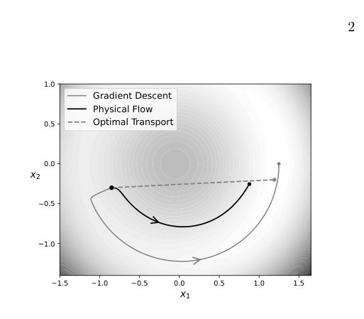
<figcaption class="paper-figure-caption"><b>Fig 1.</b> FIG. 1. The gradient descend velocity is −∇ψ, based only on the potential. The physical flow is defined as the lo- cal mean velocity −∇(ψ + T ln p), which also accounts for the temperature-driven diffusion. The corresponding opti- mal transport ensemble ˜p is made of fluid particles of con- stant velocity ∇λ. Consider a tilted mexican hat potential, V (x) = z · x −α∥x∥2 + β∥x∥4, with α = 3, β = 1, T = 0.3, and z = 0.3 ˆ x1 along the x1 axis, and an ensemble brought out of equilibrium at t = 0 by switching the bias as z →−z. Numerical integration of the physical flow shows how trajec- tories typically bend in the presence of a potential barrier along the geodesic.</figcaption>
</figure>
<figure class="paper-figure-card">
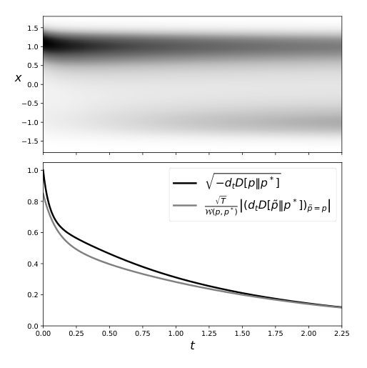
<figcaption class="paper-figure-caption"><b>Fig 2.</b> FIG. 2. Bit erasure in a Ginzburg-Landau double-well poten- tial ψ = −αx2+βx4. The parameters are set to T = 1, α = 2, β = 1, with an initial confining bias γ = −1. (Top) Relax- ation of the probability density p(x, t) over the central energy barrier toward a symmetric bimodal steady state. (Bottom) The instantaneous relaxation speed p</figcaption>
</figure>
<figure class="paper-figure-card">
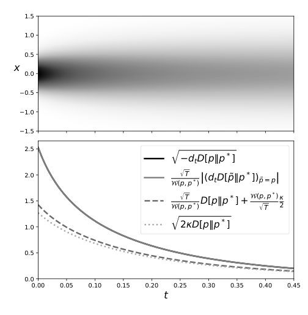
<figcaption class="paper-figure-caption"><b>Fig 3.</b> FIG. 3. Thermal expansion in a harmonic potential. The parameters are set to T = 1, κ = 2, and initial stiffness γ = 10. (Top) Symmetric expansion of the Gaussian probability density p(x, t) toward the broader steady state. (Bottom) The lower bound of Eq. (10) (gray line) saturates at all times the instantaneous relaxation speed p</figcaption>
</figure>
</div>

<p><strong>Summary.</strong> This paper develops advanced theoretical frameworks using Optimal Transport and functional inequalities to quantify how fast a system relaxes to equilibrium. By relating free energy dissipation to geometric distances like the Wasserstein metric, it provides powerful, rigorous bounds on relaxation rates in stochastic physical systems.</p>
<p><strong>Why it may be interesting.</strong> It provides rigorous, geometric tools (Optimal Transport) to analyze non-equilibrium dynamics in classical statistical mechanics systems, which is foundational knowledge for understanding thermalization processes relevant to open quantum systems.</p>
<details>
<summary>Detailed structure</summary>
<p><strong>Main problem.</strong> The paper aims to quantify the dissipation during the relaxation of conservative stochastic systems towards their steady state by establishing geometric lower bounds using functional inequalities.</p>
<p><strong>Main result.</strong> It develops and compares several thermodynamic bounds, including the Otto-Villani inequality (HWI) and the Logarithmic Sobolev Inequality (LSI), providing a geometric measure for the instantaneous speed of relaxation.</p>
<p><strong>Method.</strong> The analysis heavily relies on Optimal Transport theory (Wasserstein distance), functional inequalities connecting relative entropy to transport metrics, and deriving differential bounds via calculus identities.</p>
<p><strong>Model / system.</strong> The primary model is an overdamped Brownian particle governed by a Langevin equation, leading to the Fokker-Planck evolution for the probability density. Examples include relaxation in Landau-Ginzburg potentials or harmonic traps.</p>
<p><strong>Key observables.</strong> Relative Entropy ($D[p\|p^*]$), Wasserstein Distance ($W(p, p^*)$), and the rate of change of relative entropy ($rac{d}{dt} D[p|p^*]$).</p>
<p><strong>Important parameters / regimes.</strong> Temperature ($T$), potential curvature/convexity ($\kappa$), and time ($ au$).</p>
<p><strong>Assumptions / limitations.</strong> The analysis often assumes conditions on convexity (e.g., $\kappa > 0$ for LSI) or restricts the dynamics to regimes where relative entropy decreases along geodesics.</p>
<p><strong>Figures summary.</strong> Figures compare different flow types (Gradient Descent, Physical Flow, OT) for potentials like the Mexican hat potential and illustrate relaxation in harmonic traps, showing when various bounds saturate or fail.</p>
<p><strong>Paper structure.</strong> The paper builds from defining the stochastic dynamics and free energy to introducing optimal transport concepts. It then derives and compares multiple functional inequalities—the Otto-Villani bound, HWI, and LSI—analyzing their mathematical derivations and physical implications for relaxation speed.</p>
</details>
<details>
<summary>Abstract</summary>
<p>The dissipation in the relaxation of an ensemble of conservative stochastic systems towards the steady state is quantified by the free energy difference. Functional inequalities within the framework of [F. Otto and C. Villani, J. Funct. Anal. 173, 361 (2000)] are here revisited which connect the free energy dynamics and optimal transport, offering a geometric perspective on the instantaneous speed of relaxation in the presence of potential barriers. These are illustrated with numerical relaxation experiments on Landau-Ginzburg potentials.</p>
</details>
<p><sub><a href="#top">↑ back to top</a></sub></p>

<p><a id="paper-2606.13890"></a></p>
<h3 id="mean-first-passage-time-for-persistent-random-walks-in-annular-search-domains"><a href="http://arxiv.org/abs/2606.13890v1">Mean First Passage Time for Persistent Random Walks in Annular Search Domains</a></h3>
<p><strong>Authors:</strong> Fatemeh Saghafifar, Daniel Coombs<br>
<strong>Type:</strong> theory · <strong>Category:</strong> statistical mechanics · <strong>PDF:</strong> <a href="https://arxiv.org/pdf/2606.13890v1">https://arxiv.org/pdf/2606.13890v1</a><br>
<strong>Analysis basis:</strong> full PDF text, analyzed in chunks
<strong>Topic relevance:</strong> <code>methods for driven-dissipative</code> <strong>3/5</strong> · <code>Keldysh / 2PI / non-Gaussian methods</code> <strong>2/5</strong> · <code>non-equilibrium dynamics</code> <strong>2/5</strong> · <code>correlated / nonlocal dissipation</code> <strong>1/5</strong> · <code>driven-dissipative phase transition</code> <strong>1/5</strong> · <code>non-equilibrium universality</code> <strong>1/5</strong></p>
<div class="figure-strip-hint">↔ Scroll figures horizontally</div>
<div class="paper-figures-scroll">
<figure class="paper-figure-card">
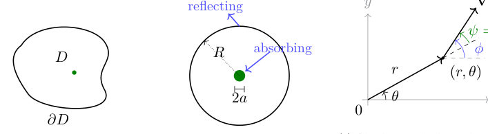
<figcaption class="paper-figure-caption"><b>Fig 1.</b> Figure 1: Schematic of the search problem. (a) A general confined domain with an absorbing small target (green node). (b) The simplified annular geometry, where the inner boundary r = a is absorbing and the outer boundary r = R is specularly reflecting. (c) Definition of the absolute heading ϕ, polar angle θ, and relative heading ψ = ϕ −θ.</figcaption>
</figure>
<figure class="paper-figure-card">
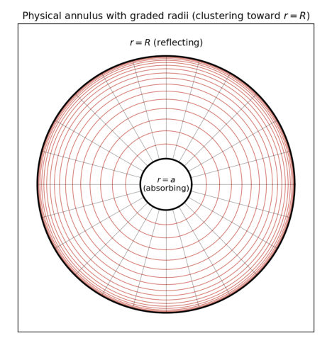
<figcaption class="paper-figure-caption"><b>Fig 2.</b> Figure 2: Power-law graded radial mesh on the annulus, shown at β = 3, Nr = 41, Nψ = 36 for visual clarity (the production runs use larger Nr, Nψ; see Subsection 5.1). Radial cells cluster toward the reflecting outer boundary r = R in order to resolve the persistence-induced wall layer of width w(κ) ≈5.41 κ−1.27, while the angular grid remains uniform. The formula givesa uniform radial mesh when β = 1.</figcaption>
</figure>
<figure class="paper-figure-card">
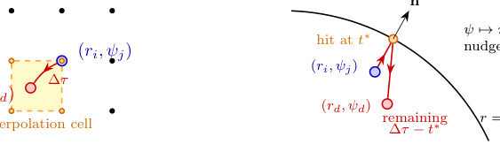
<figcaption class="paper-figure-caption"><b>Fig 3.</b> Figure 3: Semi-Lagrangian backward-characteristic step. (a) From a grid node (ri, ψj), the characteristic equation is integrated backward by ∆τ to an off-grid foot point (rd, ψd). The value at the foot point is obtained by bilinear interpolation from the surrounding cell. (b) If the backward characteristic reaches the outer wall r = R before the end of the step, the velocity is specularly reflected according to v 7→v −2(v · ˆn)ˆn, equivalently ψ 7→π −ψ, and the remaining time ∆τ −t∗is integrated to the final foot point.</figcaption>
</figure>
<figure class="paper-figure-card">
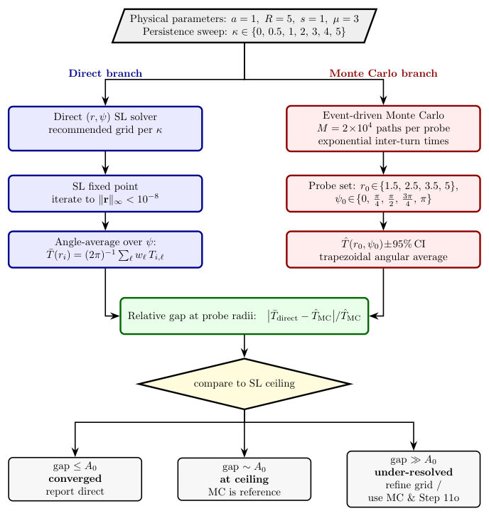
<figcaption class="paper-figure-caption"><b>Fig 4.</b> Figure 4: Validation workflow. The direct (r, ψ) solver and the event-driven Monte Carlo simulator are run independently at the same parameter values. Their angle-averaged MFPTs are compared using the relative gap. Small gaps indicate convergence, gaps near the observed semi-Lagrangian ceiling indicate the limitation of the pseudo-time formulation, and larger gaps indicate under resolution or transition to the strong persistence regime.</figcaption>
</figure>
<figure class="paper-figure-card">
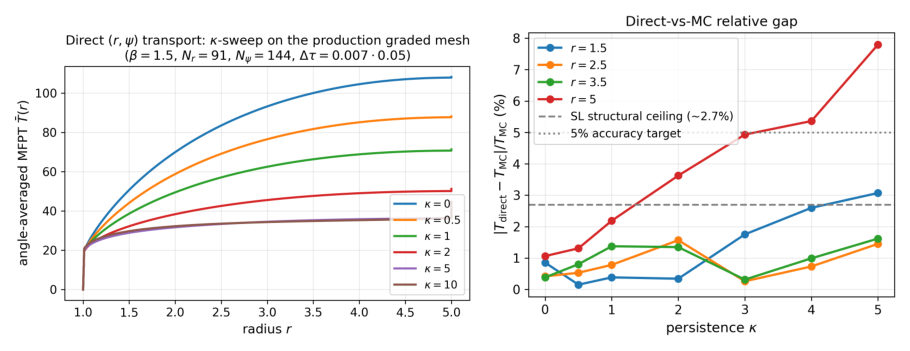
<figcaption class="paper-figure-caption"><b>Fig 5.</b> Figure 5: Persistence sweep and validation of the direct semi-Lagrangian solver in the annulus a &lt; r &lt; R with absorbing inner boundary at r = a and specularly reflecting outer boundary at r = R. Parameters: a = 1, R = 5, walker speed s = 1, turning rate µ = 3. Grid: graded mesh with clustering exponent β and radial/angular node counts (Nr, Nψ) chosen per κ fol- lowing (4.1); pseudo-time step ∆τ ∈[0.007, 0.05]. (a) Angle-averaged MFPT profiles from the direct (r, ψ) transport solver across the persistence sweep κ ∈{0, 0.5, 1, 2, 3, 4, 5}. Increas- ing κ decreases the MFPT over the validated range κ ∈[0, 5]. The κ = 10 curve is shown only to illustrate the onset of the high-persistence...</figcaption>
</figure>
</div>

<p><strong>Summary.</strong> This work develops a comprehensive theoretical and numerical framework to calculate how directional persistence affects the search efficiency of cells moving in an annular space. By modeling the random walk using correlated processes, the authors derive analytical corrections to the mean first-passage time, confirming that persistent motion significantly accelerates target finding compared to purely diffusive movement.</p>
<p><strong>Why it may be interesting.</strong> While focused on biological transport, the mathematical framework—solving time-dependent partial differential equations (PDEs) with complex boundary conditions and incorporating memory effects via kernels—is highly relevant to non-equilibrium statistical mechanics problems in confined geometries.</p>
<details>
<summary>Detailed structure</summary>
<p><strong>Main problem.</strong> The study quantifies the mean first-passage time (MFPT) for a random walker to reach an absorbing target within a confined two-dimensional annular domain.</p>
<p><strong>Main result.</strong> Directional persistence ($\kappa$) significantly reduces the search time compared to isotropic motion, with this benefit saturating at high persistence values. The MFPT can be accurately determined by combining diffusion-limit approximations with boundary layer corrections.</p>
<p><strong>Method.</strong> The analysis employs a combination of analytical techniques (Fourier mode reductions, perturbation expansions) and advanced numerical solvers (semi-Lagrangian methods, event-driven Monte Carlo simulations).</p>
<p><strong>Model / system.</strong> The model is a velocity-jump process describing cell migration in an annulus ($a < r < R$). It incorporates correlated random walks (CRW) via von Mises turning kernels to simulate directional persistence and can be extended to biased motion.</p>
<p><strong>Key observables.</strong> Mean First Passage Time ($ar{T}$ or $T_{MFPT}$), relative gap between numerical solvers, effective diffusivity ($D_{	ext{eff}}$).</p>
<p><strong>Important parameters / regimes.</strong> Persistence parameter ($\kappa$), annulus radii ($a$ and $R$), turning rate ($\mu$), bias strength ($d	au$).</p>
<p><strong>Assumptions / limitations.</strong> The analysis assumes a 2D annular geometry, constant speed motion, and relies on approximations like the fast-turning limit for analytical tractability.</p>
<p><strong>Figures summary.</strong> Figures illustrate schematics of the domain, mesh grading strategies (power-law graded meshes), and comparisons between direct solver results and Monte Carlo simulations showing convergence diagnostics.</p>
<p><strong>Paper structure.</strong> The paper progresses from defining the physical problem and modeling various random walk types to deriving analytical approximations in limits ($\kappa 	o 0$ or $\kappa 	o \infty$), followed by rigorous numerical implementation using advanced solvers and extensive cross-validation against MC simulations.</p>
</details>
<details>
<summary>Abstract</summary>
<p>We study the mean first-passage time of a random walker to a small absorbing target at the center of a two-dimensional annulus with a specularly reflecting outer boundary. The problem is motivated by natural killer cell migration toward a target cancer cell, where the goal is to quantify how long it takes immune cells to reach the target and how search efficiency depends on directional persistence and chemotactic bias. Cell motion is modeled as a velocity-jump process. We first consider a correlated random walk with a von Mises turning kernel, with a concentration parameter controlling directional persistence. We then extend the model to a biased correlated random walk using a phase-shifted turning kernel that represents preferential motion, for example following a concentration gradient. Our analysis combines closed-form benchmarks for simple and biased random walks, Fourier-mode reductions of the transport equations for the correlated and biased correlated models, and a fast-turning perturbation expansion that gives an analytical correction to the diffusion-limit mean first-passage time for the random walker. Our analytical results are supported by numerical methods that include a semi-Lagrangian solver in radial and angular coordinates, a stationary discretisation designed to handle biased transport, and an event-driven Monte Carlo simulator for cross-validation. Together, our results provide a framework relating persistent and biased immune-cell motion to target-search times in confined two-dimensional domains.</p>
</details>
<p><sub><a href="#top">↑ back to top</a></sub></p>

<p><a id="paper-2606.14363"></a></p>
<h3 id="quantum-classical-hierarchical-equations-of-motion"><a href="http://arxiv.org/abs/2606.14363v1">Quantum-Classical Hierarchical Equations of Motion</a></h3>
<p><strong>Authors:</strong> Amartya Bose<br>
<strong>Type:</strong> theory · <strong>Category:</strong> other · <strong>PDF:</strong> <a href="https://arxiv.org/pdf/2606.14363v1">https://arxiv.org/pdf/2606.14363v1</a><br>
<strong>Analysis basis:</strong> full PDF text, analyzed in chunks
<strong>Topic relevance:</strong> <code>methods for driven-dissipative</code> <strong>3/5</strong> · <code>non-equilibrium dynamics</code> <strong>2/5</strong> · <code>Keldysh / 2PI / non-Gaussian methods</code> <strong>1/5</strong> · <code>analog quantum simulation</code> <strong>1/5</strong> · <code>correlated / nonlocal dissipation</code> <strong>1/5</strong> · <code>driven-dissipative phase transition</code> <strong>1/5</strong></p>
<div class="figure-strip-hint">↔ Scroll figures horizontally</div>
<div class="paper-figures-scroll">
<figure class="paper-figure-card">
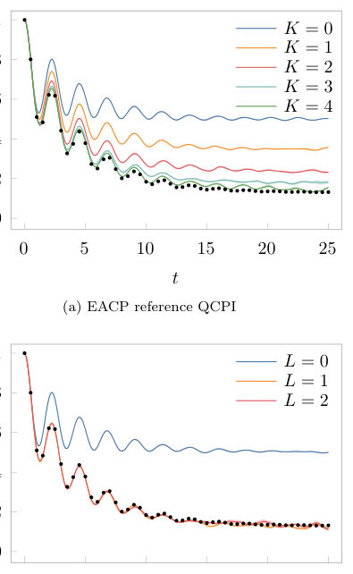
<figcaption class="paper-figure-caption"><b>Fig 1.</b> FIG. 1: Comparison of convergence of EACP-reference QCPI and QC-HEOM for the spin-boson model. Black markers: Converged QuAPI results.</figcaption>
</figure>
<figure class="paper-figure-card">
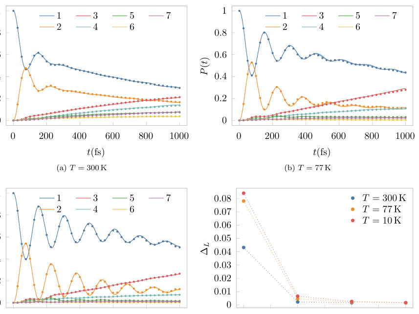
<figcaption class="paper-figure-caption"><b>Fig 2.</b> FIG. 2: Population dynamics in the 7-site Fenna–Matthews–Olson complex31 at different temperatures. Markers show the standard HEOM simulation results as reference. Lines denote the QC-HEOM results.</figcaption>
</figure>
</div>

<p><strong>Summary.</strong> The paper introduces Quantum-Classical Hierarchical Equations of Motion (QC-HEOM), a novel technique for simulating open quantum systems. It successfully merges the strengths of path integral and hierarchical equations by separating thermal effects from residual quantum memory. This results in an extremely efficient method that accurately models complex, anharmonic dynamics at low temperatures where conventional methods struggle.</p>
<p><strong>Why it may be interesting.</strong> This work is highly relevant as it provides a computationally tractable framework (QC-HEOM) to study complex open quantum dynamics in regimes (low temperature, anharmonicity) where standard HEOM methods fail or become prohibitively expensive due to the exponential growth of required auxiliary objects.</p>
<details>
<summary>Detailed structure</summary>
<p><strong>Main problem.</strong> The core problem is simulating the time-evolution of open quantum systems, specifically addressing non-Markovian dynamics and accurately capturing residual quantum memory effects.</p>
<p><strong>Main result.</strong> The proposed QC-HEOM method achieves superior efficiency compared to conventional HEOM by separating thermal fluctuations from quantum memory, especially at low temperatures. It reproduces benchmark results for complex anharmonic systems with significantly fewer auxiliary objects.</p>
<p><strong>Method.</strong> It combines the ensemble-averaged classical path reference from the Quantum-Classical Path Integral formalism with a hierarchical treatment of quantum influence functionals (QC-HEOM).</p>
<p><strong>Model / system.</strong> The method is applied to general open quantum systems, exemplified by the asymmetric spin-boson model and the seven-site Fenna–Matthews–Olson (FMO) complex. The Hamiltonian involves system coupling to an environment bath.</p>
<p><strong>Key observables.</strong> Population dynamics $P(t)$ over time; convergence quantified by time-averaged root-mean-square (RMS) population error ($\Delta_j$).</p>
<p><strong>Important parameters / regimes.</strong> Temperature ($T=300 	ext{ K}, 77 	ext{ K}, 10 	ext{ K}$); Hierarchy depth ($L$); Bath spectral density parameters.</p>
<p><strong>Assumptions / limitations.</strong> The formalism uses the Wigner approximation when extending to anharmonic environments, and it assumes that the bath correlation function can be represented by a sum of exponentials for the HEOM structure.</p>
<p><strong>Figures summary.</strong> Figures compare population dynamics $P(t)$ across different temperatures ($300 	ext{ K}, 77 	ext{ K}, 10 	ext{ K}$), showing QC-HEOM tracking benchmark results with much shallower hierarchy depths than standard HEOM.</p>
<p><strong>Paper structure.</strong> The paper introduces the limitations of existing methods (QCPI, conventional HEOM) and then develops the QC-HEOM formalism. It rigorously demonstrates its equivalence to established methods for harmonic baths before applying it successfully to anharmonic systems like FMO across varying temperatures, concluding with efficiency comparisons.</p>
</details>
<details>
<summary>Abstract</summary>
<p>We develop a quantum-classical hierarchical equations of motion (QC-HEOM) approach for simulating non-Markovian open quantum systems. The method combines the ensemble-averaged classical path reference of the quantum-classical path integral formalism with a hierarchy of auxiliary quantum influence functionals. By incorporating thermal fluctuations through an ensemble average over reference trajectories, the hierarchy is required to represent only the residual quantum memory associated with the imaginary part of the bath response function. Consequently, unlike conventional hierarchical equations of motion, QC-HEOM does not require Matsubara or Padé expansions of the thermal kernel and exhibits only weak temperature dependence of the hierarchy size. Furthermore, because thermal fluctuations are supplied through reference classical trajectories, the framework naturally extends beyond harmonic baths and enables the incorporation of anharmonic and molecular environments through externally generated trajectories. We derive the formalism and demonstrate its exactness for a harmonic bath. Applications to an asymmetric spin-boson model and the seven-site Fenna--Matthews--Olson complex illustrate the accuracy of QC-HEOM. It reproduces benchmark quasi-adiabatic path integral and hierarchical equations of motion results while requiring substantially fewer auxiliary objects, particularly at low temperatures. These results establish QC-HEOM as an efficient framework for treating residual quantum memory in quantum-classical descriptions of open-system dynamics. The separation of thermal fluctuations from residual quantum memory through the use of Wigner trajectories provides an approximate route toward hierarchical treatments of complex anharmonic environments that are inaccessible to conventional HEOM approaches.</p>
</details>
<p><sub><a href="#top">↑ back to top</a></sub></p>

<p><a id="paper-2606.14487"></a></p>
<h3 id="spin-orbit-coupling-by-design-in-quantum-state-engineering-of-atomically-defined-quantum-dots"><a href="http://arxiv.org/abs/2606.14487v1">Spin-orbit coupling by design in quantum state engineering of atomically defined quantum dots</a></h3>
<p><strong>Authors:</strong> Hermann Osterhage, Julian H. Strik, Ivan Ado, Anna M. H. Krieg, Daniel Wegner, Mikhail Titov, Alexander A. Khajetoorians<br>
<strong>Type:</strong> both · <strong>Category:</strong> other · <strong>PDF:</strong> <a href="https://arxiv.org/pdf/2606.14487v1">https://arxiv.org/pdf/2606.14487v1</a><br>
<strong>Analysis basis:</strong> full PDF text, analyzed in chunks
<strong>Topic relevance:</strong> <code>exotic spin models in light-matter</code> <strong>3/5</strong> · <code>spintronics-quantum-optics interface</code> <strong>3/5</strong> · <code>Kondo &amp; dissipative impurity</code> <strong>1/5</strong> · <code>QC/QI experiment</code> <strong>1/5</strong> · <code>quantum measurements</code> <strong>1/5</strong></p>
<div class="figure-strip-hint">↔ Scroll figures horizontally</div>
<div class="paper-figures-scroll">
<figure class="paper-figure-card">
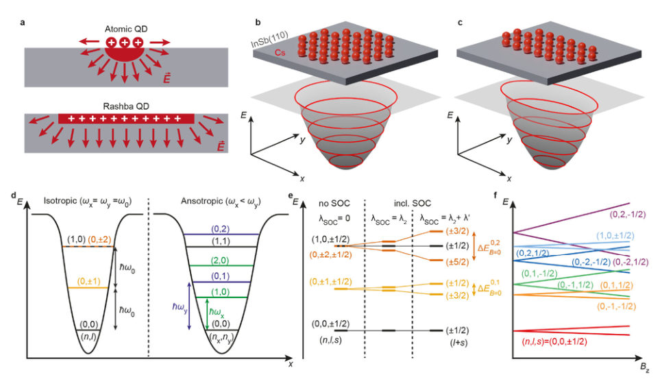
<figcaption class="paper-figure-caption"><b>Fig 1.</b> Fig 1 | 0D confinement potential well created by Cs atoms on InSb(110) and the influence of</figcaption>
</figure>
<figure class="paper-figure-card">
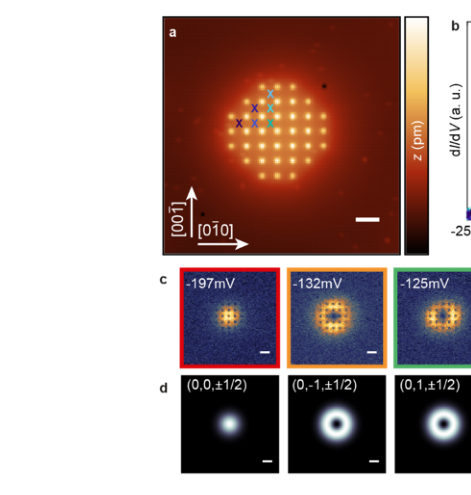
<figcaption class="paper-figure-caption"><b>Fig 2.</b> Fig 2 | Atomic-scale quantum dot derived from 37 Cs atoms on InSb(110).</figcaption>
</figure>
<figure class="paper-figure-card">
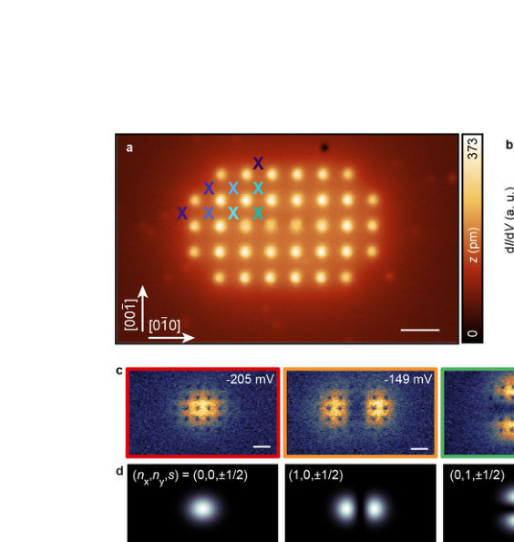
<figcaption class="paper-figure-caption"><b>Fig 3.</b> Fig 3 Anisotropic quantum dot from 36 Cs atoms on InSb(110).</figcaption>
</figure>
<figure class="paper-figure-card">
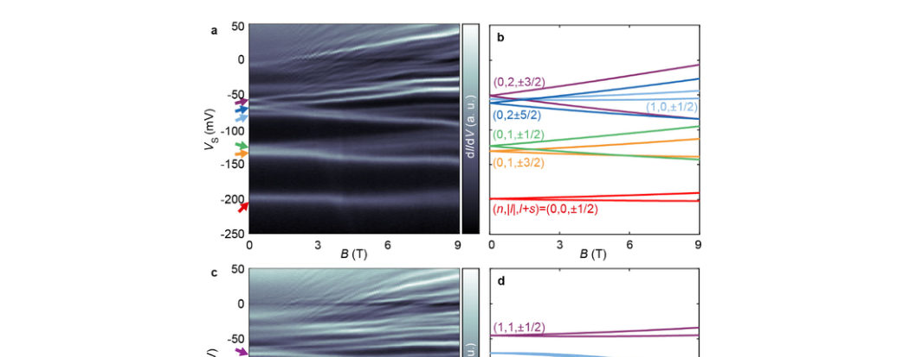
<figcaption class="paper-figure-caption"><b>Fig 4.</b> Fig 4 | Quantifying the multiplet structure and computing the SOC contributions to the</figcaption>
</figure>
</div>

<p><strong>Summary.</strong> This research demonstrates the ability to engineer and control spin-orbit coupling in semiconductor quantum dots by precisely tailoring their confining electric potentials at the atomic scale. By combining STM/STS measurements with advanced k.p theory, the authors successfully model and verify that SOC dictates measurable energy splittings and magnetic responses, paving the way for next-generation spintronic devices.</p>
<p><strong>Why it may be interesting.</strong> This work provides a concrete example of how fundamental solid-state physics concepts (SOC) can be experimentally manipulated using nanoscale electrostatic engineering, offering pathways toward realizing controllable spin qubits in semiconductor platforms relevant to quantum information science.</p>
<details>
<summary>Detailed structure</summary>
<p><strong>Main problem.</strong> The central problem is achieving precise, controllable tuning of spin-orbit coupling (SOC) within atomically defined semiconductor quantum dots (QDs). This control moves beyond simple approximations by tailoring the local electrostatic confinement potential.</p>
<p><strong>Main result.</strong> The study demonstrates that SOC-induced energy splittings and magnetic responses in QDs can be accurately predicted and controlled by designing the geometry of the confining electric fields, matching experimental observations across isotropic and anisotropic potentials.</p>
<p><strong>Method.</strong> The research combines advanced Scanning Tunneling Microscopy/Spectroscopy (STM/STS) measurements with theoretical modeling based on an effective Hamiltonian derived from a multiband k.p model.</p>
<p><strong>Model / system.</strong> The physical system is electron confinement in InSb surface quantum dots, engineered by patterning individual Cs ions to create designer electrostatic potentials. The theory uses an effective Hamiltonian incorporating kinetic energy, parabolic/triangular confinement potentials, Zeeman terms, and SOC terms beyond the standard Rashba description.</p>
<p><strong>Key observables.</strong> Zero-field splitting (ZFS) of electronic states, magnetic field dependence of energy levels ($ ext{d}I/    ext{dV}$ spectra), and spatial decay profiles of the ground state wavefunction.</p>
<p><strong>Important parameters / regimes.</strong> Confinement strengths ($\kappa_x, \kappa_y$), SOC coupling constants ($\lambda_{	ext{SOC}}$), effective electron mass ($m^*$), and magnetic field strength ($B$).</p>
<p><strong>Assumptions / limitations.</strong> The model relies on approximating the confinement potential as a sum of triangular and parabolic terms, and treating SOC perturbatively to an effective Hamiltonian.</p>
<p><strong>Figures summary.</strong> Figures illustrate STM images and $    ext{d}I/    ext{dV}$ maps for QDs with varying geometries (circular vs. anisotropic), showing characteristic energy splittings and wavefunction spatial decay patterns under applied magnetic fields.</p>
<p><strong>Paper structure.</strong> The paper progresses by first establishing the experimental platform (Cs patterning on InSb) and measurement techniques (STM/STS). It then develops a generalized theoretical Hamiltonian incorporating SOC, solving it for both isotropic and anisotropic confinement regimes to predict measurable energy splittings and spatial features.</p>
</details>
<details>
<summary>Abstract</summary>
<p>Tuning spin-orbit coupling is essential in controlling both spin and charge in confined semiconductor nanostructures, yet it is rarely a truly controllable parameter. Here, we show control over the spin-orbit Hamiltonian in quantum dots and the resulting quantum states by tailoring the confinement potential with atomic-scale precision. Using scanning tunnelling microscopy and spectroscopy, we pattern individual Cs ions into designer quantum dot structures on the surface of indium antimonide, in which electrons from a two-dimensional electron gas are confined with chosen in-plane electric-field gradients. We then quantify the atomic level structure, both spatially resolving the orbital character of the electronic states and their magnetic-field evolution. We demonstrate that the level structure, including the induced zero-field splitting, can be tailored by the designed geometry of the local electric fields. These effects can be described using a Hamiltonian that allows consistent treatment of the confinement-induced spin-orbit coupling beyond the conventional Bychkov-Rashba description. This Hamiltonian is derived from a multiband k.p model and takes the energy dependence of the relevant physical parameters into account. Such precise control of spin-orbit coupling in semiconductor quantum dots is relevant to quantum and spintronic technologies.</p>
</details>
<p><sub><a href="#top">↑ back to top</a></sub></p>

<p><a id="paper-2606.14186"></a></p>
<h3 id="stochastic-thermodynamics-on-time-evolving-curved-spaces"><a href="http://arxiv.org/abs/2606.14186v1">Stochastic Thermodynamics on Time-Evolving Curved Spaces</a></h3>
<p><strong>Authors:</strong> Rihito Nagase, Shoki Sugimoto, Asuka Takatsu, Takahiro Sagawa<br>
<strong>Type:</strong> theory · <strong>Category:</strong> statistical mechanics · <strong>PDF:</strong> <a href="https://arxiv.org/pdf/2606.14186v1">https://arxiv.org/pdf/2606.14186v1</a><br>
<strong>Analysis basis:</strong> full PDF text, analyzed in chunks
<strong>Topic relevance:</strong> <code>non-equilibrium dynamics</code> <strong>3/5</strong> · <code>non-equilibrium universality</code> <strong>2/5</strong> · <code>Keldysh / 2PI / non-Gaussian methods</code> <strong>1/5</strong> · <code>correlated / nonlocal dissipation</code> <strong>1/5</strong> · <code>driven-dissipative phase transition</code> <strong>1/5</strong> · <code>methods for driven-dissipative</code> <strong>1/5</strong></p>
<div class="figure-strip-hint">↔ Scroll figures horizontally</div>
<div class="paper-figures-scroll">
<figure class="paper-figure-card">
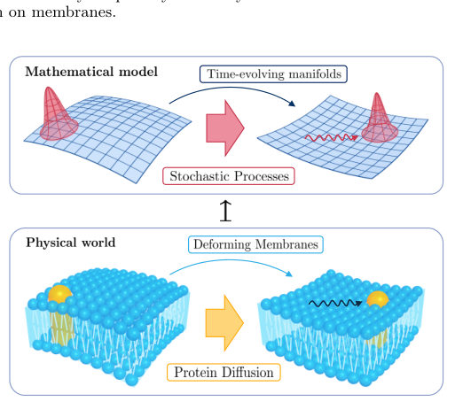
<figcaption class="paper-figure-caption"><b>Fig 1.</b> FIG. 1. Correspondence between the mathematical model and protein diffusion on a biological membrane. The diffusing protein (yellow) is on the biological membrane (cyan) which generally deforms in time. Correspondingly, when modeled as a stochastic process, the manifold (blue) on which the dis- tribution (red) is defined becomes time-dependent.</figcaption>
</figure>
<figure class="paper-figure-card">
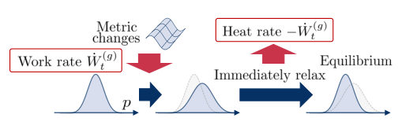
<figcaption class="paper-figure-caption"><b>Fig 2.</b> FIG. 2. Schematic of the energy balance. The time- dependent metric tensor performs work on the kinetic energy, which is instantaneously dissipated as heat through momen- tum relaxation in the overdamped regime.</figcaption>
</figure>
<figure class="paper-figure-card">
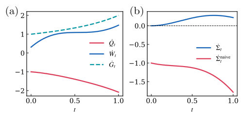
<figcaption class="paper-figure-caption"><b>Fig 3.</b> FIG. 3. (a) Time evolution of ˙Qt, ˙Wt, and ˙Gt obtained from the numerical simulation. The parameters are kBT = 1.0, γ = 5.0, τ = 1.0, r0 = 1.0, rτ = 0.5, and κ = 1.0. (b) Comparison of ˙Σt and ˙Σnaive t . The correct entropy production rate ˙Σt remains non-negative, whereas the naive one ˙Σnaive t can become negative.</figcaption>
</figure>
</div>

<p><strong>Summary.</strong> This paper develops stochastic thermodynamics for systems moving on curved spaces whose metrics change with time. It introduces a crucial correction term ($\dot{G}_t$) into the energy balance equations to ensure that entropy production always obeys the Second Law, even when geometry changes. This framework is vital for quantifying thermodynamic costs in dynamic physical settings like diffusion on evolving membranes.</p>
<p><strong>Why it may be interesting.</strong> This work provides powerful tools for analyzing non-equilibrium processes where the environment or geometry itself is changing over time, which is relevant for understanding open quantum systems coupled to dynamic baths or evolving media.</p>
<details>
<summary>Detailed structure</summary>
<p><strong>Main problem.</strong> The core problem is constructing a thermodynamically consistent framework for stochastic thermodynamics when the underlying physical space has a time-dependent metric.</p>
<p><strong>Main result.</strong> The authors derive necessary correction terms ($\dot{G}_t$) to the standard heat and work definitions, ensuring that the total entropy production rate rigorously satisfies the Second Law of Thermodynamics even as the geometry evolves.</p>
<p><strong>Method.</strong> The methodology involves analyzing energy balance using overdamped Langevin dynamics on curved manifolds, employing relative entropy calculations between forward and backward processes in the $\epsilon 	o 0$ limit.</p>
<p><strong>Model / system.</strong> The system is an overdamped Langevin process evolving on a nonrelativistic curved space described by a time-dependent metric $g_t$. The analysis uses Fokker-Planck equations and concepts from geometric measure theory.</p>
<p><strong>Key observables.</strong> Entropy production rate ($\dot{\Sigma}_t$), Heat rate ($\dot{Q}_t$), Work rate ($\dot{W}_t$), and the metric correction term ($\dot{G}_t$).</p>
<p><strong>Important parameters / regimes.</strong> The time dependence of the metric ($g_t$) is crucial, as are the overdamped regime assumption and the small noise limit ($\epsilon 	o 0$).</p>
<p><strong>Assumptions / limitations.</strong> Assumes the topology remains constant (diffeomorphic) and that the heat bath thermalizes much faster than the manifold evolution.</p>
<p><strong>Figures summary.</strong> Figures illustrate the time evolution of $\dot{Q}_t$, $\dot{W}_t$, and $\dot{G}_t$ for a sphere example, comparing correct non-negative entropy production against naive calculations that violate the Second Law.</p>
<p><strong>Paper structure.</strong> The paper builds from defining the dynamics on curved spaces to establishing detailed balance conditions via relative entropy measures. It then derives the full thermodynamic decomposition of energy change, culminating in showing the dynamics are a gradient flow of the relative entropy functional under a Wasserstein metric.</p>
</details>
<details>
<summary>Abstract</summary>
<p>We construct stochastic thermodynamics of overdamped Langevin systems on nonrelaticvistic curved spaces with time-dependent metrics. The time dependence of the metric contributes to the energy balance by performing work on the kinetic energy, which is instantaneously dissipated as heat in the overdamped regime. This contribution makes our framework thermodynamically consistent so that entropy production satisfies the second law of thermodynamics. As a special case, when the metric evolves according to backward Ricci flow, the entropy balance exhibits a structure similar to Perelman's entropy functional. Our framework provides a way to quantify thermodynamic costs in dynamics on time-evolving spaces such as diffusion on membranes.</p>
</details>
<p><sub><a href="#top">↑ back to top</a></sub></p>

<p><a id="paper-2606.14577"></a></p>
<h3 id="trap-quenched-matter-wave-optics-for-dual-species-lensing"><a href="http://arxiv.org/abs/2606.14577v1">Trap-Quenched Matter-Wave Optics for Dual Species Lensing</a></h3>
<p><strong>Authors:</strong> Gabriel Müller, Timothé Estrampes, Claudia Puertas González, Jannik Ströhle, David B. Reinhardt, Dana Codruta Marinica, Ethan R. Elliott, Jason R. Williams, Nathan Lundblad, Eric Charron, Ernst M. Rasel, Matthias Meister, Wolfgang P. Schleich, Naceur Gaaloul, Nicholas P. Bigelow<br>
<strong>Type:</strong> both · <strong>Category:</strong> quantum gases · <strong>PDF:</strong> <a href="https://arxiv.org/pdf/2606.14577v1">https://arxiv.org/pdf/2606.14577v1</a><br>
<strong>Analysis basis:</strong> full PDF text, analyzed in chunks
<strong>Topic relevance:</strong> <code>analog quantum simulation</code> <strong>3/5</strong> · <code>non-equilibrium dynamics</code> <strong>2/5</strong> · <code>methods for driven-dissipative</code> <strong>1/5</strong> · <code>non-equilibrium universality</code> <strong>1/5</strong> · <code>quantum measurements</code> <strong>1/5</strong> · <code>quantum optics experiment</code> <strong>1/5</strong></p>
<div class="figure-strip-hint">↔ Scroll figures horizontally</div>
<div class="paper-figures-scroll">
<figure class="paper-figure-card">
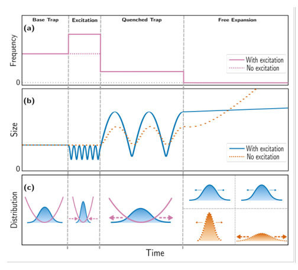
<figcaption class="paper-figure-caption"><b>Fig 1.</b> FIG. 1. Scheme of the trap-quenched collimation technique. The vertical gray lines separate the different stages of the collimation sequence, which consist of excitation, decompression, and release. Panel (a) shows the temporal evolution of the trap frequency for two different protocols: with a collective mode excitation followed by the evolution in the quenched trap (solid red line), and the same sequence without excitation (dotted red line). Panel (b) shows the correspond- ing evolution of the BEC size. The excited protocol (solid blue line) develops larger in-trap size oscillations and reaches a larger size at release, hence a lower expansion velocity. The unexcited protocol (dotted...</figcaption>
</figure>
<figure class="paper-figure-card">
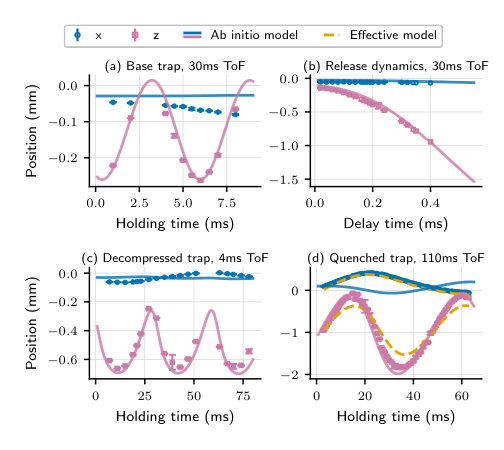
<figcaption class="paper-figure-caption"><b>Fig 2.</b> FIG. 2. Comparison of different experimental sequences with ab- initio simulations for the CoM dynamics. These sequences were used, among others, to calibrate the chip simulations by fitting pa- rameters such as magnetic fields and gradients. The blue circles and red squares are displaying the experimental measurements for the x and z-axis of the camera frame while the solid lines of the same color represents the simulated results. The error bars give the 1σ-deviation of the experimental measurements. Panel (a) shows the oscillations obtained after the transport from the evaporation trap to the base trap. Panel (b) shows the release dynamics as a function of the delay time between the coils...</figcaption>
</figure>
<figure class="paper-figure-card">
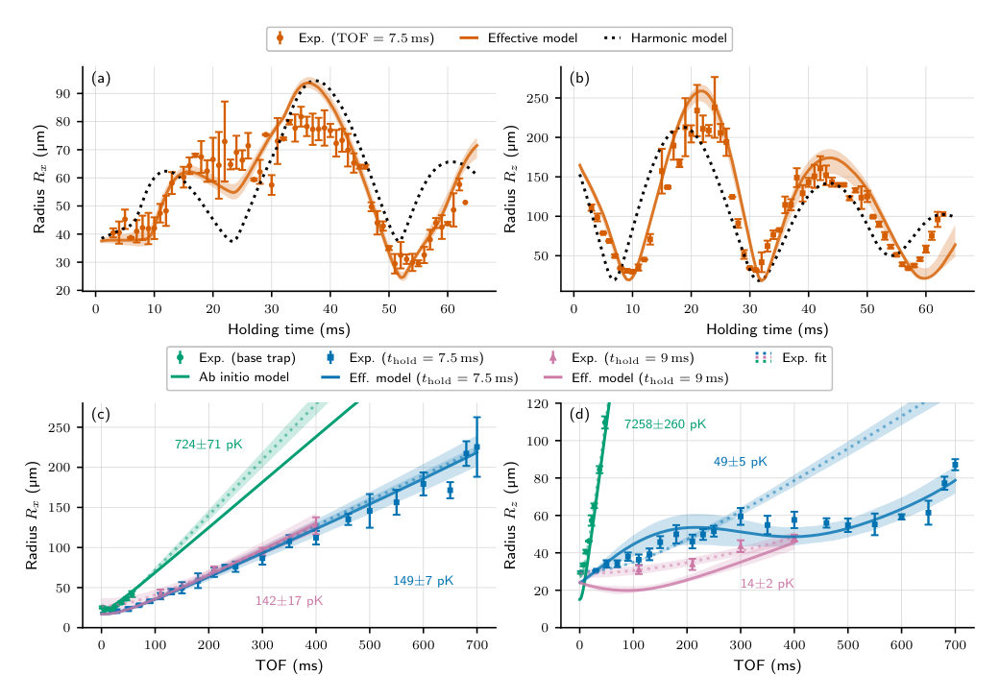
<figcaption class="paper-figure-caption"><b>Fig 3.</b> FIG. 3. Size dynamics from base and lensing trap. Panels (a) and (b) show the evolution of the BEC size along the x and z-axis for different holding times in the lensing trap. The orange points are experimentally measured Thomas-Fermi radii and error bars displaying standard deviation between individual measurements. The solid orange line shows the size dynamics obtained from an effective model taking into account inhomogeneities in the lensing trap curvature. The black dotted line shows the size dynamics with trap frequencies obtained at the trap minimum, emphasizing the importance to consider spatially resolved trap curvatures. Panels (c) and (d) show the time-of-flight BEC expansion...</figcaption>
</figure>
<figure class="paper-figure-card">
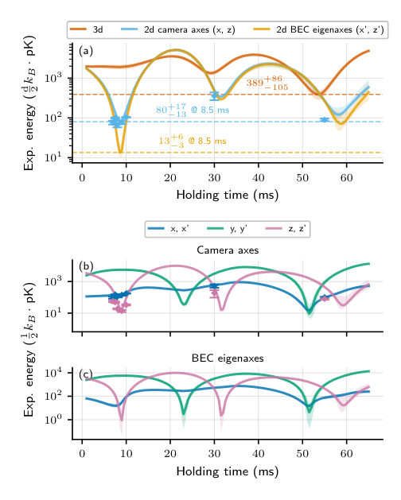
<figcaption class="paper-figure-caption"><b>Fig 4.</b> FIG. 4. Time evolution of the expansion energies in the different frame of interest. The simulated expansion energies are compared when possible to measured expansion energies at different holding times. Panel (a) displays the 3D expansion energy (orange line) while the blue and yelow curves are displaying the expansion energies re- spectively in the camera frame and the BEC frame. These two differ- ent frames come from the misalignment of the BEC eigenaxes with respect to the camera axes, see Methods. Panel (b) and (c) show the time evolution of the 1d expansion energies along the camera frame axes and the BEC eigenaxes, respectively.</figcaption>
</figure>
<figure class="paper-figure-card">
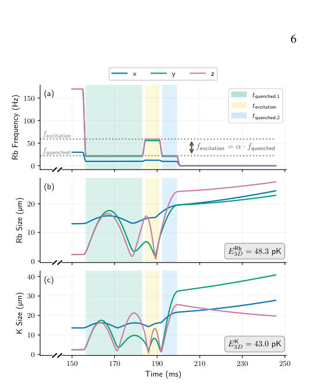
<figcaption class="paper-figure-caption"><b>Fig 5.</b> FIG. 5. Extension of the trap-quenched collimation technique to a dual-species system. For a non-interacting system, we considered a transport from the evaporation trap to a base trap. The trap frequen- cies are then decreased to go into the quenched trap before briefly exciting the atoms and going back into the quenched trap depicted by the green, yellow and blue shaded areas respectively. The frequen- cies of the excitation trap are scaled with respect to the quenched trap: fexcitation = α · fquenched. The time evolution of the Rb fre- quencies are displayed in panel (a) with the x, y and z frequencies given respectively by the blue, green and red curves. K frequencies are related through...</figcaption>
</figure>
</div>

<p><strong>Summary.</strong> The paper details the development and application of trap-quenched collimation for Bose-Einstein condensates to enhance atom interferometry tests of the Universality of Free Fall. By combining novel experimental techniques with sophisticated modeling, the authors predict that dual-species BECs can achieve the necessary low expansion energies required for unprecedented precision in space-based fundamental physics measurements.</p>
<p><strong>Why it may be interesting.</strong> This work represents a cutting edge intersection of quantum sensing and advanced atomic physics, demonstrating how precise control over matter-wave expansion in space can push fundamental measurement limits beyond terrestrial capabilities.</p>
<details>
<summary>Detailed structure</summary>
<p><strong>Main problem.</strong> The primary goal is to improve tests of the Universality of Free Fall (UFF) using Bose-Einstein condensates (BECs), which requires exquisite control over expansion energies and center-of-mass dynamics for dual-species systems.</p>
<p><strong>Main result.</strong> The authors successfully demonstrated a trap-quenched collimation technique on single-species BECs in space, theoretically predicting simultaneous collimation for a ${}^{41}	ext{K}–{}^{87}	ext{Rb}$ mixture that meets the energy requirements for $10^{-15}$ accuracy UFF tests.</p>
<p><strong>Method.</strong> The research combines experimental implementation of trap-quenched collimation with detailed theoretical modeling, using effective models and <em>ab initio</em> simulations to track BEC size dynamics during trapping and free expansion.</p>
<p><strong>Model / system.</strong> The physical system is a BEC trapped in an atom chip setup, tested aboard the International Space Station. The model involves simulating time-dependent magnetic field interactions via gauged atom chip potentials and using effective models for post-release ballistic/semi-free expansion.</p>
<p><strong>Key observables.</strong> 2D and 3D expansion energies ($E_{exp}$), Center-of-Mass (CoM) oscillation dynamics, and the Thomas-Fermi radii of the BEC during Time-of-Flight (ToF).</p>
<p><strong>Important parameters / regimes.</strong> Expansion energy levels ($\sim k_B \cdot 78 	ext{ pK}$ for single species; $\sim 43-48 	ext{ pK}$ for dual species), interrogation time up to $700 	ext{ ms}$, and target accuracy of $10^{-15}$.</p>
<p><strong>Assumptions / limitations.</strong> The analysis relies on fitting complex dynamics using effective models, which requires approximations like assuming no inter-species interaction initially and simplifying the magnetic field gradients during ToF.</p>
<p><strong>Figures summary.</strong> Figures illustrate the trap-quenched collimation scheme (Fig. 1), CoM oscillation control (Fig. 2a/b), and comparisons between simulated vs. measured expansion energies in various reference frames (Fig. 3, Fig. 4).</p>
<p><strong>Paper structure.</strong> The paper progresses from introducing the UFF test requirement to detailing the trap-quenched collimation technique, presenting single-species measurements, developing sophisticated models for size dynamics, and finally extending the theory to predict optimal dual-species performance.</p>
</details>
<details>
<summary>Abstract</summary>
<p>Dual-species atom interferometry in space promises precise tests of the Universality of Free Fall (UFF), with a sensitivity that grows quadratically with the extended interrogation time accessible in weightlessness. These tests demand exquisite control over the expansion energies of both condensed sources as well as over their differential center-of-mass dynamics. We propose a trap-quenched collimation technique featuring in-trap excitations of collective modes compatible with state-of-the-art atom-chip setups. Using NASA's Cold Atom Laboratory aboard the International Space Station, we demonstrate it on a single-species $^{87}$Rb condensate. By controlling the center-of-mass release dynamics we observe free expansion times up to 700 ms and measure a two-dimensional expansion energy of $k_B \cdot 78\pm 9 \;\mathrm{pK}$ in the imaging plane. A detailed model of the magnetically-induced dynamics indicates that this corresponds to a two-dimensional expansion energy of about $k_B \cdot 15^{+12}_{-5}\; \mathrm{pK}$ along two of the condensate's eigenaxes. Finally, we theoretically study this trap-quenched collimation scheme for a $^{41}$K-$^{87}$Rb mixture, predicting a simultaneous collimation that meets the expansion energy requirements for a state-of-the-art UFF test at the $10^{-15}$ accuracy level.</p>
</details>
<p><sub><a href="#top">↑ back to top</a></sub></p>

<p><a id="paper-2606.14101"></a></p>
<h3 id="altermagnetism-and-bond-nematicity-in-the-spin-math517math-square-lattice-math518math-model"><a href="http://arxiv.org/abs/2606.14101v1">Altermagnetism and bond-nematicity in the spin-$1/2$ square lattice $J_1-J_2-δ$ model</a></h3>
<p><strong>Authors:</strong> Tanja Đurić, Shenlong Yu, Pinaki Sengupta<br>
<strong>Type:</strong> theory · <strong>Category:</strong> strongly correlated electrons · <strong>PDF:</strong> <a href="https://arxiv.org/pdf/2606.14101v1">https://arxiv.org/pdf/2606.14101v1</a><br>
<strong>Analysis basis:</strong> full PDF text, analyzed in chunks
<strong>Topic relevance:</strong> <code>exotic spin models in light-matter</code> <strong>3/5</strong> · <code>analog quantum simulation</code> <strong>2/5</strong> · <code>Keldysh / 2PI / non-Gaussian methods</code> <strong>1/5</strong> · <code>methods for driven-dissipative</code> <strong>1/5</strong> · <code>spintronics-quantum-optics interface</code> <strong>1/5</strong></p>
<div class="figure-strip-hint">↔ Scroll figures horizontally</div>
<div class="paper-figures-scroll">
<figure class="paper-figure-card">
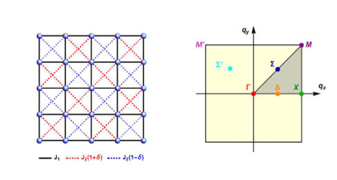
<figcaption class="paper-figure-caption"><b>Fig 1.</b> FIG. 1: Illustration of the exchange couplings in the spin-1/2 J1 −J2 −δ model (left panel) and the momentum space Bril- louin zone (right panel) with the high symmetry points Γ, M and X corresponding to the crystal momenta ⃗q = (0, 0), (π, π) and (π, 0), respectively. Mirror reflection over the vertical line of reflection connects M and M ′ (Σ and Σ′) points.</figcaption>
</figure>
<figure class="paper-figure-card">
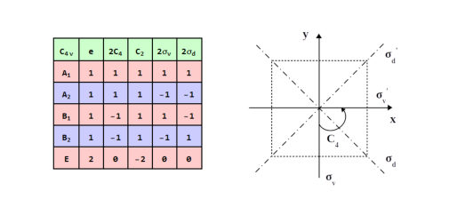
<figcaption class="paper-figure-caption"><b>Fig 2.</b> FIG. 2: Group elements and characters of the C4v point group corresponding to the little group for the crystal momenta ⃗q = (0, 0), (π, 0),(π, π) and (±π/2, π/2). The C4v group has one doubly degenerate irrep that corresponds to doubly de- generate eigenstates of the J1 −J2 −δ model defined on the L × L × 4 clusters with straight (rectangular) edges shown in Fig. 1 and with PBC.</figcaption>
</figure>
<figure class="paper-figure-card">
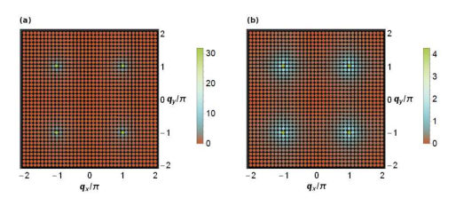
<figcaption class="paper-figure-caption"><b>Fig 3.</b> FIG. 3: Static spin structure factors Sf(⃗q) and Sz f(⃗q) defined in Eqs. (8) and (9) for the cluster size 9 × 9 × 4 and with PBC for J2/J1 = 0.2 and δ = 0.5. The structure factors show sharp peaks corresponding to the AM order.</figcaption>
</figure>
<figure class="paper-figure-card">
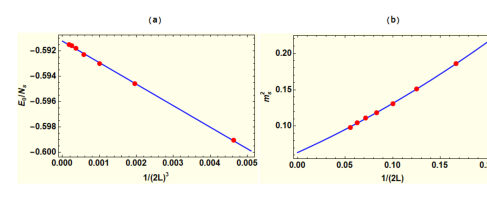
<figcaption class="paper-figure-caption"><b>Fig 4.</b> FIG. 4: The ground state energy and the squared staggered magnetization order parameter finite size scaling for J2/J1 = 0.2 and δ = 0.5. The system linear dimension is 2L for the L × L × 4 cluster with PBC. The ground state corresponds to the irrep A1 in Fig. 2 at the crystal momentum ⃗q = (0, 0) and with the spin parity eigenvalue P = 1 in the Stot z = 0 sector.</figcaption>
</figure>
<figure class="paper-figure-card">
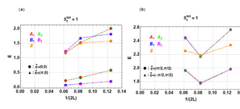
<figcaption class="paper-figure-caption"><b>Fig 5.</b> FIG. 5: Chiral magnon splitting in the altermagnetic regime with J2/J1 = 0.2 and δ = 0.5 for the crystal momenta (a) ⃗q = (0, 0), (π, 0) (Γ and X high symmetry points in Fig. 1) and (b) ⃗q = (±π/2, π/2) (Σ and Σ′ high symmetry points in Fig. 1). A1, A2, B1, B2 and E denote irreps of the C4v point group that correspond to the eigenstates in different symme- try sectors. Energy levels for ⃗q = (π, π) (M high symmetry point) are identical to the energy levels for ⃗q = (0, 0). As ex- plained in the main text the magnon modes corresponding to the irreps A1 and B1, and equivalently to the irreps A2 and B2 have opposite chiralities. Also, A1 and A2 / B1 and B2 magnon modes have opposite chiralities.</figcaption>
</figure>
</div>

<p><strong>Summary.</strong> This work theoretically explores the complex magnetic ground states of frustrated spin systems using advanced ML-enhanced VMC methods. It demonstrates that increasing frustration melts the altermagnetic order, leading to an exotic state featuring coexisting bond-nematic and SPT valence bond solid orders. This advances understanding of quantum phases near magnetically ordered materials.</p>
<p><strong>Why it may be interesting.</strong> The focus on emergent nematic order arising from quantum fluctuations near a magnetically ordered phase is crucial for understanding exotic quantum phases beyond simple magnetism or superconductivity.</p>
<details>
<summary>Detailed structure</summary>
<p><strong>Main problem.</strong> The study investigates the emergence of bond-nematicity in insulating altermagnetic materials when quantum fluctuations cause the melting of the established altermagnetic order.</p>
<p><strong>Main result.</strong> Melting the altermagnetic order leads to a novel phase characterized by coexisting symmetry protected topological (SPT) valence bond solid and bond-nematic orders, driven by magnon pair condensation.</p>
<p><strong>Method.</strong> The research employs advanced computational techniques combining Variational Monte Carlo (VMC) with machine learning approaches using symmetry enhanced neural network architectures (GCNNs).</p>
<p><strong>Model / system.</strong> The system modeled is the spin-$1/2$ square lattice $J_1-J_2-\delta$ model, which exhibits altermagnetic ordering under specific exchange coupling conditions.</p>
<p><strong>Key observables.</strong> Bond-nematic correlation functions ($\hat{O}_{\alphaeta}$), bond-nematic structure factor ($N_{\alphaeta}^f(\vec{q})$), staggered magnetization ($m_s^2$), and the excitation spectrum (chiral magnon splitting).</p>
<p><strong>Important parameters / regimes.</strong> The exchange modulation parameter $\delta$, the degree of geometric frustration, and the lattice size $L$ are key parameters defining the studied regimes.</p>
<p><strong>Assumptions / limitations.</strong> Calculations assume results extrapolate to the thermodynamic limit; LSWT is used for excitation analysis but neglects magnon-magnon interactions.</p>
<p><strong>Figures summary.</strong> Figures illustrate exchange couplings on the Brillouin zone, chiral splitting of magnon modes at various momenta, and finite size scaling plots for order parameters like staggered magnetization and bond-nematic correlations.</p>
<p><strong>Paper structure.</strong> The paper progresses from establishing the model and methods (VMC/NQS) to confirming altermagnetism via magnon splitting. It then analyzes the highly frustrated regime where magnetic disorder sets in, culminating in the identification of coexisting SPT VBS and bond-nematic orders through symmetry analysis.</p>
</details>
<details>
<summary>Abstract</summary>
<p>We study appearance of bond-nematicity in insulating altermagnetic materials induced by increased frustration and quantum-fluctuations driven melting of the altermagnetic order. Using novel machine learning approach that combines symmetry enhanced neural network architectures and variational Monte Carlo we consider the spin-$1/2$ square lattice $J_1-J_2-δ$ model known to have altermagnetic ordering in the regime of small geometric frustration and a gapless spin liquid phase in the regime of strong frustration and small exchange interaction modulation parameter $δ$. In the regime where exchange modulation is relatively large, resulting in the significant splitting of the magnon modes with different chiralities in the altermagnetic regime, we find that melting of the altermagnetic order by increased frustration leads to an intriguing phase that hosts coexisting symmetry protected topological valence bond solid and bond-nematic orders. The phase is characterized by condensation of magnon pairs that results in bond-nematicity, breaking of U(1) spin rotation and $\mathbb{Z}_2$ spin inversion symmetries and chiral splitting of the triplon-like energy levels in the excitation spectrum. Whilst numerous recent studies address non-trivial impact of altermagnetic moments on various properties in altermagnetic materials, like electronic band structure and superconductivity, influence of strong quantum fluctuations and phases that can result from melting of the altermagnetic order are much less explored. Our study therefore presents an important step in identifying exotic phases of matter that can emerge in vicinity of the altermagnetic order.</p>
</details>
<p><sub><a href="#top">↑ back to top</a></sub></p>

<p><a id="paper-2606.13912"></a></p>
<h3 id="directadaptive-mixture-phase-gradient-learning-for-neural-network-quantum-states-with-complex-phase-structure"><a href="http://arxiv.org/abs/2606.13912v1">Direct/adaptive-mixture phase-gradient learning for neural-network quantum states with complex phase structure</a></h3>
<p><strong>Authors:</strong> Yi-Ran Xue, Rui Wang, Baigeng Wang, Chenan Wei<br>
<strong>Type:</strong> theory · <strong>Category:</strong> numerical methods · <strong>PDF:</strong> <a href="https://arxiv.org/pdf/2606.13912v1">https://arxiv.org/pdf/2606.13912v1</a><br>
<strong>Analysis basis:</strong> full PDF text, analyzed in chunks
<strong>Topic relevance:</strong> <code>analog quantum simulation</code> <strong>3/5</strong> · <code>methods for driven-dissipative</code> <strong>3/5</strong> · <code>Frenkel-Kontorova</code> <strong>1/5</strong> · <code>correlated cavity matter</code> <strong>1/5</strong></p>
<div class="figure-strip-hint">↔ Scroll figures horizontally</div>
<div class="paper-figures-scroll">
<figure class="paper-figure-card">
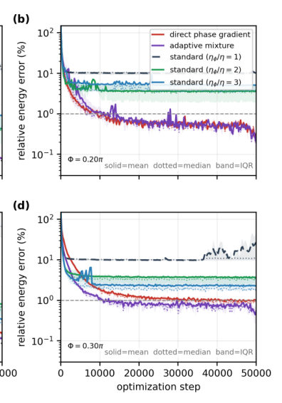
<figcaption class="paper-figure-caption"><b>Fig 1.</b> Fig. 1 Training dynamics on the 100-site flux ladder. All panels use the L = 50 flux ladder (100 sites, half filling), an MLP with width 128 and depth 2, batch size 1024, 48 MCMC sweeps per optimization step, and base learning rate η = 0.03. (a) Energy training curves at Φ = 0.2π, with DMRG reference Eref = −44.826. (b) Relative-error training curves at Φ = 0.2π. (c) Energy training curves at Φ = 0.3π, with DMRG reference Eref = −43.303. (d) Relative-error training curves at Φ = 0.3π. Solid lines show means, dotted lines medians, and shaded bands interquartile ranges.</figcaption>
</figure>
<figure class="paper-figure-card">
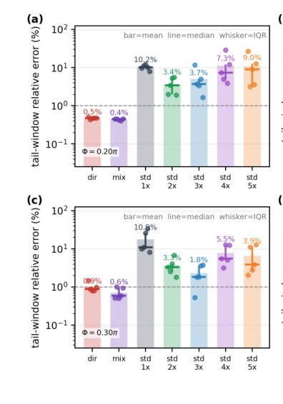
<figcaption class="paper-figure-caption"><b>Fig 2.</b> Fig. 2 Tail-window performance on the 100-site flux ladder. All panels use the same runs and convergence-window convention as Fig. 1. (a) Tail-window relative-error statistics at Φ = 0.2π. (b) Tail-window energies at Φ = 0.2π. (c) Tail-window relative-error statistics at Φ = 0.3π. (d) Tail-window energies at Φ = 0.3π. Bars show means, horizontal lines medians, whiskers interquartile ranges, and points individual numeric seeds.</figcaption>
</figure>
<figure class="paper-figure-card">
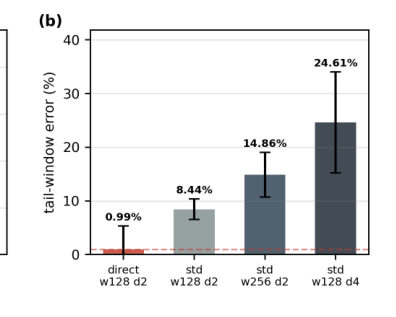
<figcaption class="paper-figure-caption"><b>Fig 3.</b> Fig. 3 The estimator advantage is not removed by wider or deeper standard-gradient networks. The benchmark is the L = 50 (100-site) flux ladder at Φ = 0.3π, trained for 50,000 steps with the same optimizer settings as Fig. 1. (a) Width sweep comparing direct and standard phase- gradient training at fixed depth 2 for MLP widths 128 and 256. (b) Shallow direct phase-gradient performance for width 128, depth 2 compared with standard-gradient MLPs of width 128, depth 2; width 256, depth 2; and width 128, depth 4. The shallow direct phase-gradient network reaches a median tail-window error below 1%, while standard phase-gradient networks remain substantially worse after increasing width or depth.</figcaption>
</figure>
<figure class="paper-figure-card">
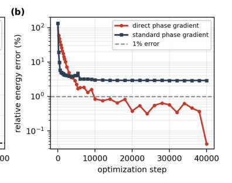
<figcaption class="paper-figure-caption"><b>Fig 4.</b> Fig. 4 Representative ResNet comparison at Φ = 0.3π. The system is again the L = 50 (100-site) flux ladder; the MLP is replaced by a ResNet ansatz and trained for 40,000 optimization steps. (a) Energy convergence for direct and standard phase-gradient training. (b) Relative-error convergence for the same runs. The direct phase-gradient estimator continues descending towards the DMRG reference, whereas the standard phase-gradient run plateaus well above it.</figcaption>
</figure>
<figure class="paper-figure-card">
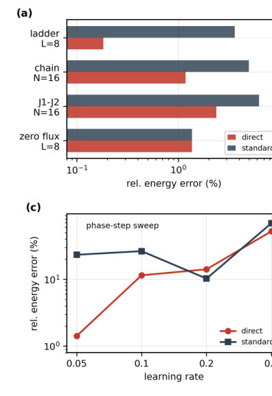
<figcaption class="paper-figure-caption"><b>Fig 5.</b> Fig. 5 Mechanism and controls. (a) Mean relative-error controls for a flux ladder with L = 8, a flux chain with N = 16, a frustrated J1–J2 flux chain with N = 16, and a zero-flux ladder control; the large ratios in complex models come mainly from fewer bad-basin seeds for the direct estimator. (b) Standard/direct phase-gradient variance ratios on a representative complex-flux trajectory, sum- marized by median, mean, and maximum ratio. (c) Phase-learning-rate sweep for estimators over the displayed learning-rate multipliers. (d) Exact-diagonalization controls for a chain with N = 16 and ladder with L = 10. The direct phase-gradient advantage appears as improved robustness in complex flux...</figcaption>
</figure>
</div>

<p><strong>Summary.</strong> This paper addresses the critical issue of noisy phase gradient estimation when using Neural Network Quantum States (NQS) for complex quantum many-body systems. The authors introduce a theoretically superior direct estimator and an adaptive mixture that combines it with standard methods. This combination dramatically reduces optimization variance, enabling accurate simulations in regimes characterized by complex phases, such as those found in synthetic gauge fields.</p>
<p><strong>Why it may be interesting.</strong> For a theoretical physicist working on AMO or open quantum systems, this work provides a crucial computational tool for simulating Hamiltonians with inherent gauge fields or non-trivial topology, allowing access to regimes previously limited by numerical noise.</p>
<details>
<summary>Detailed structure</summary>
<p><strong>Main problem.</strong> The optimization of Neural-Network Quantum States (NQS) is fragile when the ground state possesses a non-trivial complex phase structure, leading to convergence stalls.</p>
<p><strong>Main result.</strong> A direct local energy derivative estimator ($\hat{g}_{dir}$) and an adaptive mixture combining it with the standard score-function estimator significantly reduce variance, achieving much lower errors than standard methods on flux ladder systems.</p>
<p><strong>Method.</strong> The authors compare three estimators for the phase gradient force: a standard stochastic estimator, a direct local energy derivative estimator, and a theoretically derived adaptive mixture of the two. The advantage is shown to stem from noise reduction in the estimator itself.</p>
<p><strong>Model / system.</strong> The work uses NQS parameterized by separated amplitude-phase ansatzes to simulate quantum many-body systems, benchmarked on a 100-site flux ladder (gauge fields) and chiral XXX chains.</p>
<p><strong>Key observables.</strong> Median relative error of the phase gradient force convergence; variance ($ ext{Var}$) and covariance ($ ext{Cov}$) between estimators.</p>
<p><strong>Important parameters / regimes.</strong> Flux strength ($\Phi$), system size ($L=100$ sites), mixing coefficient ($\lambda$).</p>
<p><strong>Assumptions / limitations.</strong> The method assumes a separated amplitude-phase parameterization for the direct estimator; convergence analysis relies on idealized flow bounds and is not claimed for all arbitrary network structures.</p>
<p><strong>Figures summary.</strong> Figures compare training trajectories showing that $\hat{g}_{dir}$ significantly outperforms standard baselines, especially when networks are widened or deepened. The adaptive mixture trajectory ($\lambda$) shows a dynamic shift towards the low-variance direct signal during optimization.</p>
<p><strong>Paper structure.</strong> The paper establishes the problem (phase gradient noise), introduces and analyzes two estimators ($\hat{g}_{std}$ vs $\hat{g}_{dir}$), develops the theoretically optimal adaptive mixture, and validates its superior performance across multiple complex physical benchmarks.</p>
</details>
<details>
<summary>Abstract</summary>
<p>Neural-network quantum states (NQS) are a leading variational tool for quantum many-body physics, yet their optimization is fragile whenever the ground state carries a non-trivial sign or complex phase structure, a situation generic to gauge fields, broken time-reversal symmetry, and fermionic statistics. We trace this fragility to the stochastic estimator of the phase gradient rather than to network expressiveness. The phase sector of the Monte Carlo energy gradient is a noisy score-function estimator; differentiating the local energy instead yields a direct estimator that is unbiased for the same phase force, has far lower variance, and requires only a separated amplitude--phase ansatz. Demonstrated on a 100-site flux ladder, a small network trained this way reaches $0.89\%$ median error, where tuned standard baselines plateau at $1.8\%$ and wider or deeper standard-gradient networks degrade from $8.4\%$ to $24.6\%$. The advantage carries over to chiral XXX chains: the direct estimator again converges to a markedly lower error than the standard one, across $α$ and size; it grows with flux and vanishes in zero-flux controls. An adaptive-mixture of the two estimators is provably never worse in variance than the better endpoint at the optimal mixing coefficient, with seed-resolved diagnostics tracing much of the gain to eliminating failed runs. Estimator design thus emerges as a first-class lever for complex-valued neural quantum states.</p>
</details>
<p><sub><a href="#top">↑ back to top</a></sub></p>

<p><a id="paper-2606.14254"></a></p>
<h3 id="dose-efficient-quantum-phase-estimation-in-lossy-optical-interferometry"><a href="http://arxiv.org/abs/2606.14254v1">Dose-efficient Quantum Phase Estimation in Lossy Optical Interferometry</a></h3>
<p><strong>Authors:</strong> Qilin Yu, Ben Wang, Kaimin Zheng, Minghao Mi, Hui Li, Lijian Zhang<br>
<strong>Type:</strong> experiment · <strong>Category:</strong> quantum information and computing · <strong>PDF:</strong> <a href="https://arxiv.org/pdf/2606.14254v1">https://arxiv.org/pdf/2606.14254v1</a><br>
<strong>Analysis basis:</strong> full PDF text, analyzed in chunks
<strong>Topic relevance:</strong> <code>interference shaping light</code> <strong>3/5</strong> · <code>quantum optics experiment</code> <strong>3/5</strong> · <code>QC/QI experiment</code> <strong>1/5</strong> · <code>quantum measurements</code> <strong>1/5</strong></p>
<div class="figure-strip-hint">↔ Scroll figures horizontally</div>
<div class="paper-figures-scroll">
<figure class="paper-figure-card">
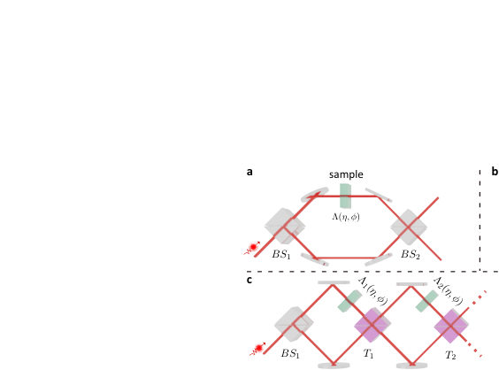
<figcaption class="paper-figure-caption"><b>Fig 1.</b> Fig. 1. a, The single pass (SP) strategy. b, The multi-pass (MP) strategy, where photons interact with the sample 𝑁times. c, The 𝑁-pass control-enhanced sequential (CS) strategy, featuring adjustable beam-splitters (BSs) denoted as 𝑇𝑘(𝑘= 1, ..., 𝑁−1) as control modules. The sample, modeled by a BS of transmissivity 𝜂and a phase shifter 𝜙, is illustrated in the green dashed box. In all strategies, the input single photon is partitioned between two modes by the BS1 with transmissivity 𝛼2. After single or multiple interactions with the sample, the beams are redirected to the BS2 with transmissivity 0.5, and photon detection occurs at the output ports.</figcaption>
</figure>
<figure class="paper-figure-card">
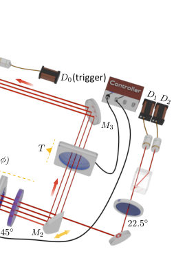
<figcaption class="paper-figure-caption"><b>Fig 2.</b> Fig. 2. Experimental setup. Photon pairs are generated through the parametric downconversion process in a 𝛽-barium borate (BBO) crystal pumped by frequency- doubled Ti:Sapphire laser pulses. The idler photon serves as a trigger (𝐷0). The heralded single photons undergo the evolution Λ(𝜂, 𝜙) and the control 𝑇multiple times in the loop composed of four mirrors 𝑀1−4, where 𝑀1 and 𝑀2 are D-shape mirrors. The number of passes depends on the position of 𝑀2. Finally, the photons are collected with single-mode fibers and detected using two single-photon detectors, 𝐷1 and 𝐷2.</figcaption>
</figure>
<figure class="paper-figure-card">
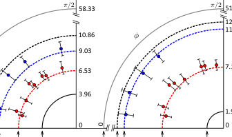
<figcaption class="paper-figure-caption"><b>Fig 3.</b> Fig. 3. a, QFI per dose, 𝜉, relative to the QL 𝜉𝑄𝐿for estimation of a single lossy phase with strategies: a single-pass (SP) strategy with a classical probe (gray dashed line), the parallel strategy with 𝑁-photon unbalanced N00N states (black dashed and solid lines), the MP strategy with 𝑁passes, the CS strategy with 𝑁-stage optimal controls. Here the solid lines demonstrate the ratios of QFI per dose for the strategies when 𝑁are integer numbers, and dashed lines demonstrate the optimal ratios for the strategies with continuous 𝑁. b-c, Phase estimation uncertainty 𝛿ˆ𝜙= 1/√𝐷th𝜉of different 𝜙∈(0, 𝜋/2) with 𝑁= 13 for 𝜂= {0.928, 0.977} and 𝐷th = {1231, 1602}, respectively. The radial direction...</figcaption>
</figure>
<figure class="paper-figure-card">
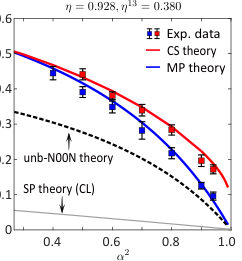
<figcaption class="paper-figure-caption"><b>Fig 4.</b> Fig. 4. Results for 𝜉/𝜉QL by varying 𝛼2: a, 4-stage MP and CS strategies at 𝜂= 0.665; b, 13-stage MP and CS strategies at 𝜂= 0.928. The results are compared to the parallel strategy using unbalanced N00N states and the SP strategy.</figcaption>
</figure>
</div>

<p><strong>Summary.</strong> The paper investigates how to maximize measurement precision (Quantum Fisher Information per Dose) in optical interferometers suffering from photon loss. By comparing sequential strategies—especially one incorporating active control—against passive methods, the authors demonstrate that controlled multi-pass interactions yield near-quantum-limited performance under strict dose constraints.</p>
<p><strong>Why it may be interesting.</strong> This work provides concrete experimental evidence for optimizing resource utilization in quantum metrology, directly addressing practical constraints like sample damage which is a major hurdle for implementing high-precision quantum sensors.</p>
<details>
<summary>Detailed structure</summary>
<p><strong>Main problem.</strong> The core problem is developing dose-efficient quantum phase estimation techniques for optical interferometry when light intensity is severely limited (dose-limited regimes) and photon loss is present.</p>
<p><strong>Main result.</strong> Control-enhanced sequential strategies significantly outperform both the classical limit and parallel N00N state benchmarks, achieving Quantum Fisher Information per Dose ($\xi$) that approaches the fundamental quantum limit.</p>
<p><strong>Method.</strong> The authors compare multiple quantum sensing protocols (Single Pass, Multi-Pass, Control-Enhanced Sequential) by calculating the Quantum Fisher Information (QFI) normalized by the total dose used.</p>
<p><strong>Model / system.</strong> The physical system is a two-arm Mach-Zehnder Interferometer (MZI) incorporating a lossy sample in one arm. The analysis models photon loss using transmissivity ($\eta$) and compares different sequential interaction strategies.</p>
<p><strong>Key observables.</strong> Quantum Fisher Information per Dose ($\xi$), phase estimation uncertainty ($\delta\hat{\phi}$), and the ratio $\xi/\xi_{QL}$.</p>
<p><strong>Important parameters / regimes.</strong> Transmissivity ($\eta$), total dose constraint ($D_{th}$), number of passes ($N$), and initial state splitting parameter ($\alpha$).</p>
<p><strong>Assumptions / limitations.</strong> The analysis often relies on post-selection techniques to analyze the surviving, information-carrying components of the quantum state.</p>
<p><strong>Figures summary.</strong> Figures compare $\xi/\xi_{QL}$ for various strategies (SP, MP, CS) as a function of loss ($\eta$) and passes ($N$), demonstrating the superiority of the Control-Enhanced Sequential strategy.</p>
<p><strong>Paper structure.</strong> The paper systematically introduces the dose-limited regime, derives the QFI per dose metric ($\xi$), compares sequential vs. parallel strategies (MP vs. N00N), and culminates in showing that active control (CS) maximizes $\xi$ by approaching the quantum limit.</p>
</details>
<details>
<summary>Abstract</summary>
<p>Optical interferometry is a cornerstone technique for precise phase measurements across various fields. In many applications, for example, biological imaging, it often necessitates stringent limits on light intensity to prevent adverse effects on light-sensitive samples, a condition known as dose-limited regimes. Maximizing the precision per dose is therefore crucial. In quantum metrology, quantum correlations enable high precision in phase estimation while adhering to dose constraints. Nevertheless, photon loss, including absorption by a sample, substantially diminishes the benefits of quantum enhancement in interferometry. In this work, we experimentally investigate a dose-efficient approach to quantum phase estimation using sequential strategies in the presence of loss. Performance of sequential strategies with and without control is evaluated through quantum Fisher information (QFI) per dose. Experimental results show that both sequential strategies exceed the classical limit and outperform the parallel strategy using unbalanced N00N states. Notably, the control-enhanced sequential strategy attains superior QFI per dose, approaching the quantum limit. These results highlight the promise of sequential strategy for imaging and sensing in resource-constrained scenarios, marking a significant step toward practical and efficient quantum metrology in lossy environments.</p>
</details>
<p><sub><a href="#top">↑ back to top</a></sub></p>

<p><a id="paper-2606.14455"></a></p>
<h3 id="optimal-decoding-of-small-codes-by-density-matrix-propagation"><a href="http://arxiv.org/abs/2606.14455v1">Optimal Decoding of Small Codes by Density Matrix Propagation</a></h3>
<p><strong>Authors:</strong> Anthony Benois, Pierre Cussenot, Grégoire Misguich, Nicolas Sangouard, Kiara Hansenne<br>
<strong>Type:</strong> theory · <strong>Category:</strong> quantum information and computing · <strong>PDF:</strong> <a href="https://arxiv.org/pdf/2606.14455v1">https://arxiv.org/pdf/2606.14455v1</a><br>
<strong>Analysis basis:</strong> full PDF text, analyzed in chunks
<strong>Topic relevance:</strong> <code>methods for driven-dissipative</code> <strong>3/5</strong> · <code>quantum measurements</code> <strong>3/5</strong> · <code>measurement-induced transitions</code> <strong>1/5</strong></p>
<div class="figure-strip-hint">↔ Scroll figures horizontally</div>
<div class="paper-figures-scroll">
<figure class="paper-figure-card">
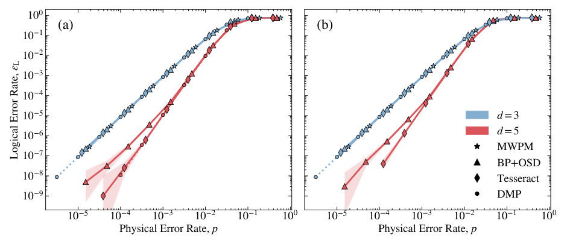
<figcaption class="paper-figure-caption"><b>Fig 1.</b> FIG. 2. Logical error rate as a function of the physical error rate p for the triangular code T with (a) r = 3 and (b) r = d rounds, using various decoders at distances d = 3 and d = 5. Shaded regions indicate statistical error bars obtained from N = 109 samples. The DMP simulations were performed without pruning for d = 3. For d = 5, pruning was used and the plotted values correspond to the lower bound εlow L . The cutoff was chosen such that the gap εup L −εlow L remained around 10% of εlow L , making the gap negligible on the scale of the figure. The computation of all the DMP data points took over 125 000 hours on a single work station CPU. For d = 5 and r = d, the total number of...</figcaption>
</figure>
<figure class="paper-figure-card">
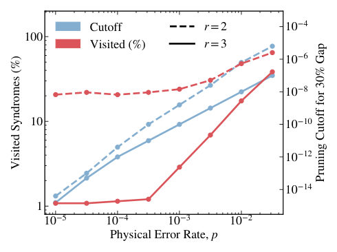
<figcaption class="paper-figure-caption"><b>Fig 2.</b> FIG. 3. Fraction of syndrome histories explored to obtain a 30% gap between the upper and lower bounds on the logical error rate (red, left axis) for the distance-five triangular code T2 with r = 2 and r = 3 rounds. The corresponding prun- ing cutoff is shown on the right axis (blue). For a number of rounds r = 2 and r = 3, the total number of syndrome histories is 221 &gt; 2 × 106 and 228 &gt; 2 × 108, respectively.</figcaption>
</figure>
<figure class="paper-figure-card">
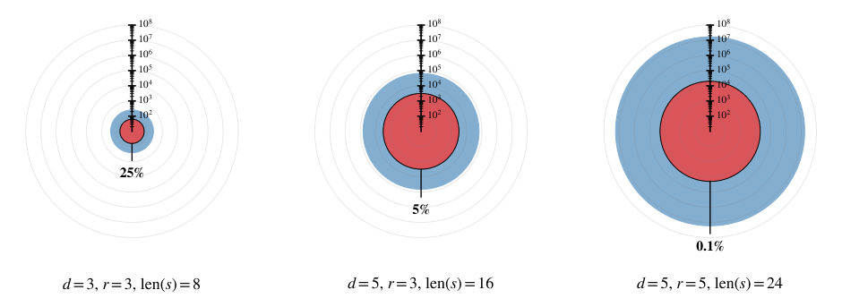
<figcaption class="paper-figure-caption"><b>Fig 3.</b> FIG. 4. Total number of syndrome histories (blue) and minimal number required to approximate the logical error rate within 1% relative error (red) for the repetition code across various code parameters. The relevant syndromes are selected based on their largest contributions to the logical error rate, ps p(fail | s), and the percentage indicates their fraction relative to the total. The physical error rate is p = 10−3.</figcaption>
</figure>
<figure class="paper-figure-card">
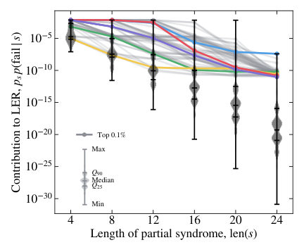
<figcaption class="paper-figure-caption"><b>Fig 4.</b> FIG. 5. Representative paths in the syndrome tree for the distance-5 repetition code (r = 5 rounds, which leads to a syndrome history of length (r + 1)(d −1) = 24). Black violin plots show the full distribution of syndromes. Grey paths represent typical paths from the top 0.1% of syndromes contributing most to the logical error rate εL, while coloured paths are selected examples from these grey paths. The yellow path illustrates that, after one and two rounds (syndrome lengths 4 and 8), most syndromes contribute more than it, yet it becomes one of the highest-contributing paths after all d rounds. The physical error rate is p = 10−3.</figcaption>
</figure>
<figure class="paper-figure-card">

<figcaption class="paper-figure-caption"><b>Fig 5.</b> FIG. 6. Logical error rate as a function of the physical error rate p for the repetition code with r = d rounds, using various decoders at distances d = 3 and d = 5. Shaded regions indicate statistical error bars. We used N = 108 shots except for the Planar decoder for which we used N = 107 shots. The Planar and DMP decoders are ML, in contrast to the others. The DMP simulations were realised without pruning and are therefore exact to machine precision.</figcaption>
</figure>
</div>

<p><strong>Summary.</strong> This paper rigorously analyzes quantum error correction decoding under realistic circuit noise, comparing heuristic decoders against an optimal maximum-likelihood benchmark using Density Matrix Propagation. By developing pruning methods to manage the exponential complexity of syndrome histories, the authors quantify how much performance is lost by practical algorithms compared to theory. This work advances the understanding of fault tolerance feasibility for complex codes.</p>
<p><strong>Why it may be interesting.</strong> This work is highly relevant as it tackles the practical limitations of fault tolerance by providing rigorous benchmarks for decoding algorithms. The techniques developed for bounding error rates via partial syndrome information are crucial for scaling QEC simulations beyond current limits.</p>
<details>
<summary>Detailed structure</summary>
<p><strong>Main problem.</strong> The core challenge is achieving accurate and efficient decoding for fault-tolerant quantum computation when subjected to realistic circuit-level noise, which introduces temporal correlations.</p>
<p><strong>Main result.</strong> The study benchmarks various practical decoders against an optimal maximum-likelihood benchmark, finding significant performance degradation for some algorithms (like BP+OSD) in relevant noise regimes.</p>
<p><strong>Method.</strong> The authors employ Density Matrix Propagation (DMP) to compute the optimal decoding decision by tracking the density matrix through syndrome measurement histories. They use pruning techniques to manage the exponential complexity of the full syndrome tree exploration.</p>
<p><strong>Model / system.</strong> The work analyzes Quantum Error Correction (QEC) using stabilizer codes, such as the repetition code and cellular automaton/triangular codes. The noise is modeled as circuit-level noise affecting syndrome measurements over multiple rounds.</p>
<p><strong>Key observables.</strong> Logical Error Rate ($\epsilon_L$), conditional post-measurement state ($\varrho_s$), and the fraction of relevant syndrome histories contributing to $\epsilon_L$.</p>
<p><strong>Important parameters / regimes.</strong> Physical error rate ($p$), code distance ($d$), number of syndrome extraction rounds ($r$), and the computational complexity scaling with $2^{ns}$.</p>
<p><strong>Assumptions / limitations.</strong> The primary approximation is using pruning techniques to bound the summation over exponentially many possible syndrome histories, yielding a lower bound ($\epsilon_{	ext{low}}^L$) on the true error rate.</p>
<p><strong>Figures summary.</strong> Figures illustrate matching graphs for specific codes (e.g., $T_2$), showing how error mechanisms relate to detectors and logical observables under noise. Other figures compare $\epsilon_L$ vs. physical error rate ($p$) for different decoders, highlighting the required fraction of syndrome histories needed for accuracy.</p>
<p><strong>Paper structure.</strong> The paper develops from establishing the need for optimal decoding benchmarks (DMP) to detailing the mathematical framework ($\varrho_s$, TLS decomposition), and finally applying this framework by comparing multiple state-of-the-art decoders across various code families under increasing noise levels, while analyzing computational bottlenecks.</p>
</details>
<details>
<summary>Abstract</summary>
<p>Accurate and efficient decoding is a crucial component for achieving fault-tolerant quantum computing. Realistic circuit-level noise introduces temporal correlations and degeneracy, making optimal (maximum-likelihood) decoding computationally intractable in general. As a result, practical decoders rely on heuristic approximations, and it is generally difficult to quantify how suboptimal they are, as this strongly depends on the code and noise model considered. In this work, we study the accuracy of practical decoding algorithms under circuit-level noise by comparing them against a maximum likelihood decoding benchmark. Our approach propagates the density matrix through the full memory experiment and computes the optimal decoding decision for each syndrome history. We introduce pruning techniques with rigorous bounds, allowing us to access larger numbers of syndrome-extraction rounds. We apply this framework to small instances of the repetition code and a cellular automaton code, and benchmark minimum-weight perfect matching (MWPM), belief propagation with ordered statistics decoding (BP+OSD), Tesseract, and Planar decoders against optimal decoding. While standard decoders remain close to optimal for the repetition code, we find significant deviations for the cellular automaton code, with BP+OSD deteriorating already in experimentally relevant noise regimes. Moreover, the pruning method developed here highlights that, at low physical error rates, only a narrow fraction of syndrome histories contributes significantly to the logical error rate.</p>
</details>
<p><sub><a href="#top">↑ back to top</a></sub></p>

<p><a id="paper-2606.13874"></a></p>
<h3 id="dynamical-multiferroicity-in-framework-materials"><a href="http://arxiv.org/abs/2606.13874v1">Dynamical multiferroicity in framework materials</a></h3>
<p><strong>Authors:</strong> Marek Matas, Carl P. Romao<br>
<strong>Type:</strong> theory · <strong>Category:</strong> other · <strong>PDF:</strong> <a href="https://arxiv.org/pdf/2606.13874v1">https://arxiv.org/pdf/2606.13874v1</a><br>
<strong>Analysis basis:</strong> full PDF text, analyzed in chunks
<strong>Topic relevance:</strong> <code>exotic spin models in light-matter</code> <strong>3/5</strong> · <code>spintronics-quantum-optics interface</code> <strong>3/5</strong></p>
<div class="figure-strip-hint">↔ Scroll figures horizontally</div>
<div class="paper-figures-scroll">
<figure class="paper-figure-card">

<figcaption class="paper-figure-caption"><b>Fig 1.</b> FIG. 1. Phonon magnetism in Zn(NH4)(fmt)3. a) Crystal structure of the primitive unit cell, with atoms colored by element (Zn gray, O red, N light blue, C brown, H black). b) Projection onto the xy plane of the atomic trajectories in the circularly polarized superposition of the degenerate IR-active mode pair with the largest magnetic moment. Each ellipse traces the motion of one atom; displacements are magnified by the factor indicated in the upper right (×141) for visibility. The trajectories are shown for the period following a model circularly polarized laser pulse (see Sec. II for details). The selected mode at 51 THz is dominated by the motion of the H atoms within the NH+ 4 cation,...</figcaption>
</figure>
<figure class="paper-figure-card">

<figcaption class="paper-figure-caption"><b>Fig 2.</b> FIG. 2. Phonon magnetism in Cd(Gua)(fmt)3. a) Crystal structure of the primitive unit cell, with atoms colored by element (Cd magenta, O red, N light blue, C brown, H black). b) Projection onto the xy plane of the atomic trajectories in the circularly polarized superposition of the degenerate IR-active mode pair with the largest magnetic moment. Each ellipse traces the motion of one atom; displacements are magnified by the factor indicated in the upper right (×141) for visibility. The trajectories are shown for the period following a model circularly polarized laser pulse (see Sec. II for details). Although the guanidinium cation contains H atoms with large effective gyromagnetic ratios,...</figcaption>
</figure>
<figure class="paper-figure-card">

<figcaption class="paper-figure-caption"><b>Fig 3.</b> FIG. 3. Phonon magnetism in BPO4. a) Crystal structure of the primitive unit cell, with atoms colored by element (P purple, O red, B green). b) Projection onto the xz plane of the atomic trajectories in the circularly polarized superposition of the degenerate IR-active mode pair with the largest magnetic moment. Each ellipse traces the motion of one atom; displacements are magnified by the factor indicated in the upper right (×424) for visibility. The trajectories are shown for the period following a model circularly polarized laser pulse (see Sec. II for details). The large magnetic moment is generated by the dominant circular motion of the boron atom; this gives the mode a high degree of...</figcaption>
</figure>
<figure class="paper-figure-card">

<figcaption class="paper-figure-caption"><b>Fig 4.</b> FIG. 4. Phonon magnetism in SrTiO3. a) Crystal structure of the primitive unit cell, with atoms colored by element (Sr green, Ti blue, O red). b) Projection onto the xz plane of the atomic trajectories in the circularly polarized superposition of the degenerate IR-active mode pair with the largest magnetic moment. Each ellipse traces the motion of one atom; displacements are magnified by the factor indicated in the upper right (×424) for visibility. The trajectories are shown for the period following a model circularly polarized laser pulse (see Sec. II for details). The magnetic moment is dominated by oxygen motion: one oxygen sublattice follows an approximately circular trajectory while...</figcaption>
</figure>
<figure class="paper-figure-card">

<figcaption class="paper-figure-caption"><b>Fig 5.</b> FIG. 5. Phonon magnetism in ScF3. a) Crystal structure of the primitive unit cell, with atoms colored by element (Sc purple, F lilac). b) Projection onto the xy plane of the atomic trajectories in the circularly polarized superposition of the degenerate IR-active mode pair with the largest magnetic moment. Each ellipse traces the motion of one atom; displacements are magnified by the factor indicated in the upper right (×141) for visibility. The trajectories are shown for the period following a model circularly polarized laser pulse (see Sec. II for details). In contrast to SrTiO3, the higher cubic symmetry mixes the Sc and F displacements, preventing strong localization of angular momentum...</figcaption>
</figure>
</div>

<p><strong>Summary.</strong> This work explores dynamical multiferroicity—the generation of magnetization using circularly polarized light interacting with phonons—to find new magnetic materials. By performing ab initio calculations on diverse frameworks, the authors demonstrate that flexible MOFs can host exceptionally large phonon-induced magnetic moments. This suggests a pathway for optically controlling magnetism in next-generation functional materials.</p>
<p><strong>Why it may be interesting.</strong> The concept connects lattice dynamics (phonons) directly to magnetic properties in a controllable, light-induced manner. This bridges solid-state physics, optics, and magnetism, which is relevant for understanding emergent quantum phenomena in engineered materials.</p>
<details>
<summary>Detailed structure</summary>
<p><strong>Main problem.</strong> The research investigates dynamical multiferroicity, which is the mechanism by which magnetic fields can be generated optically via circularly polarized phonons in various crystalline materials.</p>
<p><strong>Main result.</strong> Framework materials, particularly $    ext{Zn}(    ext{NH}_4)( ext{formate})_3$, are identified as highly promising candidates because their flexible structures allow for large phonon-induced magnetic moments exceeding those of traditional inorganic oxides like $    ext{SrTiO}_3$.</p>
<p><strong>Method.</strong> The study relies on ab initio calculations (DFT/DFPT) to compute phonon properties, including the calculation of phonon magnetic moments ($\mu_{\pm}$) and estimating the maximum achievable magnetization using the Lindemann melting criterion.</p>
<p><strong>Model / system.</strong> The physical systems are diverse inorganic and organic framework materials (MOFs), ranging from perovskites to coordination compounds. The model involves coupling lattice vibrations (phonons) with magnetism, treating the magnetic moment generation as a consequence of phonon circular motion.</p>
<p><strong>Key observables.</strong> Phonon magnetic moment ($\mu_{	ext{ph}}$), degree of circular polarization ($S$), and maximum magnetization density ($M_{	ext{melt}}$).</p>
<p><strong>Important parameters / regimes.</strong> The magnitude of the magnetic moments (compared to $\mu_n$ or $\mu_B$) and the phonon frequencies (especially those in the mid-IR range, $\ge 12 	ext{ THz}$).</p>
<p><strong>Assumptions / limitations.</strong> The maximum magnetization is often estimated using the Lindemann criterion, which provides an upper bound on achievable displacements.</p>
<p><strong>Figures summary.</strong> Figures systematically present crystal structures alongside atomic trajectories and phonon density of states plots for numerous materials, illustrating how different structural motifs yield varying levels of calculated magnetic moments.</p>
<p><strong>Paper structure.</strong> The paper progresses by establishing the theoretical framework (dynamical multiferroicity), applying it to model systems ($    ext{SrTiO}_3$, $    ext{ScF}_3$), and then systematically surveying a large library of materials, with a strong emphasis on demonstrating the superior potential of MOFs.</p>
</details>
<details>
<summary>Abstract</summary>
<p>Dynamical multiferroicity, which describes the magnetic fields generated by circularly polarized phonons in materials, is an established mechanism for optical control of magnetism. Here we perform ab initio calculations of dynamical multiferroicity in inorganic and organic framework materials, with the goal of identifying materials which enable the generation of large magnetic fields by light. We find the metal--organic framework material Zn(NH$_4$)(formate)$_3$ to have modes with magnetic moments almost twice that of SrTiO$_3$; these modes involve circular motions of NH$_4^+$ hydrogen ions with high gyromagnetic ratios. The complex structure and flexibility of framework materials can allow such angular momentum localization, and also increase the maximum light-induced magnetization permitted by the Lindemann melting criterion.</p>
</details>
<p><sub><a href="#top">↑ back to top</a></sub></p>

<p><a id="paper-2606.14088"></a></p>
<h3 id="oqmd-single-qubit-rotation-control-improves-low-cnot-multiclass-quantum-classification"><a href="http://arxiv.org/abs/2606.14088v1">OQMD: Single-Qubit Rotation Control Improves Low-CNOT Multiclass Quantum Classification</a></h3>
<p><strong>Authors:</strong> Michael A. Magid, Melissa Zeynep Ertem, Jun Suzuki<br>
<strong>Type:</strong> both · <strong>Category:</strong> quantum information and computing · <strong>PDF:</strong> <a href="https://arxiv.org/pdf/2606.14088v1">https://arxiv.org/pdf/2606.14088v1</a><br>
<strong>Analysis basis:</strong> full PDF text, analyzed in chunks
<strong>Topic relevance:</strong> <code>quantum measurements</code> <strong>3/5</strong> · <code>QC/QI experiment</code> <strong>2/5</strong> · <code>measurement-induced transitions</code> <strong>1/5</strong></p>
<div class="figure-strip-hint">↔ Scroll figures horizontally</div>
<div class="paper-figures-scroll">
<figure class="paper-figure-card">

<figcaption class="paper-figure-caption"><b>Fig 1.</b> Figure 1: Circuit diagrams for Architecture 1 (minimal): H + RZ feature encoding, single RY ansatz layer, ZXZ OQMD rotations, 0 CNOT gates (left). Architecture 3 (complex): ZZFeatureMap (12 CNOT) + RealAmplitudes (6 CNOT) + OQMD (0 CNOT) = 18 CNOT total (right). OQMD adds measurement optimization with zero CNOT overhead in both cases.</figcaption>
</figure>
<figure class="paper-figure-card">

<figcaption class="paper-figure-caption"><b>Fig 2.</b> Figure 2: OQMD concept: Standard VQC (a) measures in the computational basis, while OQMD (b) first applies trainable rotation gates to measure in an optimized basis. This adds expressivity without CNOT gates.</figcaption>
</figure>
<figure class="paper-figure-card">

<figcaption class="paper-figure-caption"><b>Fig 3.</b> Figure 3: Detailed circuit comparison: CONTROL versus OQMD on the minimal architec- ture. (a) CONTROL (parity readout, no OQMD). (b) OQMD adds ZXZ triple rotations before measurement (no additional CNOTs). Peak accuracies appear in Table 2.</figcaption>
</figure>
<figure class="paper-figure-card">

<figcaption class="paper-figure-caption"><b>Fig 4.</b> Figure 4: Summary of factorial means (left: 0 vs. 18 CNOT) and six-point mean OQMD gains with 95% CIs (right). Panel (b) annotates Pearson r on peak max-to-max margins (r ≈−0.45, Table 5); an ordinary least squares fit to mean gains would yield a different r (specifically r ≈−0.91) and is not used as a headline statistic. Peaks and Mann–Whitney tests are in Table 2. Gray dashed line: random baseline (33.33%).</figcaption>
</figure>
<figure class="paper-figure-card">

<figcaption class="paper-figure-caption"><b>Fig 5.</b> Figure 5: Minimal circuit performance (0 CNOT): pooled accuracy distributions for CON- TROL (N=200 runs) and OQMD (N=800 runs). Top: normalized step histograms (binned empirical frequencies, not kernel density). Bottom: box-and-mean summary. OQMD pool is shifted decisively rightward of CONTROL; the multimodal shape reflects the discrete ac- curacy grid (multiples of 1/30) combined with the mix of rotation codes, optimizers, and seeds. Peaks and Mann–Whitney results appear in Table 2; pooled run-level statistics are annotated in the bottom panel.</figcaption>
</figure>
</div>

<p><strong>Summary.</strong> This work introduces Optimal Quantum Measurement Decoding (OQMD), a technique that boosts quantum classification accuracy by training the readout process using only single-qubit gates. Experiments on the Iris dataset show that OQMD provides significant performance gains, sometimes surpassing those achieved with deeper, more complex circuits, highlighting that measurement optimization is crucial for near-term quantum computation.</p>
<p><strong>Why it may be interesting.</strong> While focused on quantum machine learning, the methodology of optimizing measurement bases via trainable single-qubit rotations is relevant to understanding how local control fields can enhance readout fidelity in complex quantum measurements, which has parallels in sensing or state preparation protocols.</p>
<details>
<summary>Detailed structure</summary>
<p><strong>Main problem.</strong> The work addresses improving low-CNOT quantum classification accuracy by optimizing how measurement outcomes are mapped to classical labels, a technique called Optimal Quantum Measurement Decoding (OQMD). This aims to boost performance without incurring the high error rates associated with adding more two-qubit gates.</p>
<p><strong>Main result.</strong> OQMD significantly improves peak classification accuracy, notably achieving 83.33% on minimal circuits (0 CNOTs), which surpasses the best results from deep, complex circuits (18 CNOTs). This suggests that readout optimization can yield substantial gains even when entanglement depth is limited.</p>
<p><strong>Method.</strong> The core method involves jointly optimizing trainable single-qubit rotations applied immediately before measurement with the parameters of a variational quantum circuit. Performance comparison relies on analyzing best-observed peak accuracies using statistical tests like Mann–Whitney U, rather than mean values.</p>
<p><strong>Model / system.</strong> The study uses Variational Quantum Classifiers (VQCs) tested on the Iris dataset for multiclass classification. The model structure involves an initial feature map, a variational ansatz parameterized by $    heta$, and the novel OQMD readout layer parameterized by $\phi$.</p>
<p><strong>Key observables.</strong> Classification accuracy ($\%$), CNOT count (depth proxy), Peak hold-out test accuracy ($    ext{Acc}_{\max}$), Learning improvement ($\Delta$), Mann–Whitney U statistics.</p>
<p><strong>Important parameters / regimes.</strong> CNOT depth (ranging from 0 to 18), number of trainable single-qubit rotation parameters, optimization algorithm choice (e.g., COBYLA, L-BFGS-B).</p>
<p><strong>Assumptions / limitations.</strong> The analysis emphasizes peak performance over mean performance due to the discrete and non-Gaussian nature of run-level accuracies; it also assumes that OQMD's overhead is negligible compared to CNOT gate errors.</p>
<p><strong>Figures summary.</strong> Figures illustrate circuit comparisons (minimal vs. complex), learning curves showing optimization progress, and heatmaps summarizing peak accuracy gains across different rotation codes and optimizer choices.</p>
<p><strong>Paper structure.</strong> The paper establishes the problem of VQC limitations due to measurement error; it introduces OQMD as a readout-layer fix; it details experimental comparisons across varying CNOT depths (0 to 18); finally, it presents quantitative results showing performance gains and discusses the implications for hardware resource trade-offs.</p>
</details>
<details>
<summary>Abstract</summary>
<p>Near-term variational classifiers incur substantial error and latency from two-qubit gates, yet practitioners often assume that additional entangling depth is the default route to higher accuracy. This work studies Optimal Quantum Measurement Decoding (OQMD): optimizing how quantum outcomes are mapped to classical labels by training a readout layer before measurement, jointly with the variational circuit, without adding CNOTs. Experiments use trainable triple single-qubit rotations as one concrete, hardware-native realization of OQMD; other single-qubit parametrizations fit the same classical outer loop. On the Iris benchmark with a 30-point stratified test split, the best observed 0-CNOT configuration with OQMD reaches 83.33\% accuracy, with a 96\% at 9 CNOTs, exceeding the best 18-CNOT controls (56.67\%) and the best 18-CNOT configuration with OQMD (66.67\%) under a common protocol. A six-point CNOT-depth series from 0 to 18 (fixed optimizer, iteration budget, random-seed count, and ZXZ readout) shows that the highest raw scores need not occur at the largest template, so aggregate complexity is not summarized by CNOT count alone. Because run-level accuracies are discrete and non-Gaussian, we emphasize best-observed scores and, where a global comparison of pooled runs is required, Mann--Whitney $U$ tests rather than parametric tests on means. Across architectures, OQMD shows statistically consistent but magnitude-dependent gains: large peak lifts on minimal circuits coexist with a small pooled mean shift on complex 18-CNOT runs ($p\approx 0.03$) that is not ``universal'' in the sense of uniformly large practical effects.%</p>
</details>
<p><sub><a href="#top">↑ back to top</a></sub></p>

<p><a id="paper-2606.14422"></a></p>
<h3 id="jones-matrix-analysis-of-phase-accumulation-in-a-linear-optical-multi-pass-interferometer"><a href="http://arxiv.org/abs/2606.14422v1">Jones-matrix analysis of phase accumulation in a linear-optical multi-pass interferometer</a></h3>
<p><strong>Authors:</strong> Byoung S. Ham<br>
<strong>Type:</strong> both · <strong>Category:</strong> other · <strong>PDF:</strong> <a href="https://arxiv.org/pdf/2606.14422v1">https://arxiv.org/pdf/2606.14422v1</a><br>
<strong>Analysis basis:</strong> full PDF text, analyzed in chunks
<strong>Topic relevance:</strong> <code>interference shaping light</code> <strong>3/5</strong> · <code>quantum optics experiment</code> <strong>1/5</strong></p>
<div class="figure-strip-hint">↔ Scroll figures horizontally</div>
<div class="paper-figures-scroll">
<figure class="paper-figure-card">

<figcaption class="paper-figure-caption"><b>Fig 1.</b> Fig. 1. Schematic of entanglement-free Heisenberg-limited phase estimation. D: photodetector; HWP: half-wave plate; M: mirror; PBS: polarizing beam splitter; PBD: polarizing beam displacer; QWP: quarter-wave plate.</figcaption>
</figure>
<figure class="paper-figure-card">

<figcaption class="paper-figure-caption"><b>Fig 2.</b> Figure 1 illustrates the entanglement-free Heisenberg-limited phase estimation scheme reported in ref. 25. The input light consists of single photons generated from an attenuated laser, whose photon statistics follow a Poisson distribution. A polarizing beam splitter (PBS) prepares the incident photons in the horizontal polarization state. The subsequent half-wave plate HWP(𝑝𝑝𝑝𝑝) transforms the photons into a coherent superposition state of horizontal and vertical polarization bases: |ψ𝑖𝑖𝑖𝑖⟩= 1</figcaption>
</figure>
<figure class="paper-figure-card">

<figcaption class="paper-figure-caption"><b>Fig 3.</b> Fig. 2. Experimental demonstration of multi-pass superresolution using a CW input light. PBD: polarization beam dispenser. H: Half-wave plate, M: mirror, Q: quarter-wave plate. Upper panel: N=1 (https://studio.youtube.com/video/nTsm_oR2LCY/edit). Lower panel: N=2 (see https://studio.youtube.com/video/4GIH21Tz8aU/edit).</figcaption>
</figure>
</div>

<p><strong>Summary.</strong> This work analyzes a multi-pass linear-optical interferometer using Jones matrices to determine the physical mechanism behind observed superresolution. The authors demonstrate that the effect stems from the coherent accumulation of polarization rotation across successive passes, which is robustly observable in both quantum and classical light regimes. This clarifies that the enhancement scales geometrically with the number of passes rather than solely relying on nonclassical photon resources.</p>
<p><strong>Why it may be interesting.</strong> It provides a detailed quantum optical analysis of how geometric path length enhancement (multiple passes) can lead to superresolution effects by exploiting coherent polarization dynamics, offering insights into measurement scaling beyond simple resource counting.</p>
<details>
<summary>Detailed structure</summary>
<p><strong>Main problem.</strong> The paper aims to clarify the physical origin of superresolution and claimed supersensitivity observed in a multi-pass linear-optical interferometer setup.</p>
<p><strong>Main result.</strong> Superresolution is shown to arise from coherent polarization-state rotation accumulated over multiple passes, which can be demonstrated using both single-photon quantum mechanics and classical light sources.</p>
<p><strong>Method.</strong> The analysis employs a rigorous Jones-matrix formalism applied to the round-trip evolution of the interferometer unit cell, supplemented by comparison with classical wave implementations.</p>
<p><strong>Model / system.</strong> The system is a linear-optical multi-pass interferometer involving components like HWP, QWP, PBS, and mirrors. The core analysis focuses on tracking polarization state transformations using Jones matrices across multiple passes (N).</p>
<p><strong>Key observables.</strong> Accumulated phase ($\Phi_N$), superresolution fringe frequency ($1 \pm \cos(N\phi)$), and the scaling behavior of the Fisher information.</p>
<p><strong>Important parameters / regimes.</strong> The number of coherent round trips ($N$) acts as a geometric enhancement parameter, distinct from measurement repetitions. The polarization rotation angles ($\varphi, \xi$) are key inputs.</p>
<p><strong>Assumptions / limitations.</strong> The analysis assumes lossless linear optics and that the superresolution mechanism is governed by coherent polarization-basis realignment rather than nonclassical photon statistics.</p>
<p><strong>Figures summary.</strong> Figures schematically illustrate the interferometer setup (HWP, M, PBS) and show experimental comparisons demonstrating fringe frequency doubling when increasing the number of passes from N=1 to N=2 using CW light.</p>
<p><strong>Paper structure.</strong> The paper proceeds by establishing the Jones-matrix formalism for the unit cell transformation, deriving the total round-trip operator, analyzing the resulting phase accumulation in the circular polarization basis, and finally comparing this theoretical model against experimental observations and related coherence frameworks.</p>
</details>
<details>
<summary>Abstract</summary>
<p>Quantum information science has traditionally relied on nonclassical resources, such as entangled photon pairs and squeezed states, to achieve measurement performance beyond classical limits. Here, we revisit the multi-pass photonic scheme reported in Nature 450, 393 (2007) to clarify the physical origin of the observed superresolution and the associated claim of supersensitivity. Using a rigorous Jones-matrix formalism, we show that the round-trip evolution of the HQMQ linear optics unit is equivalent to the product of two reflections in polarization space, resulting in an effective rotation operator. This equivalence reveals that the accumulated phase arises from coherent polarization-state rotation on the Poincare'e sphere. The resulting phase accumulation is interpreted geometrically as a progressive realignment of the polarization state during successive forward and backward propagations. To validate the theoretical model, a classical-wave implementation is experimentally conducted, analyzed, and compared with the corresponding Jones-matrix solution. Finally, the scaling behavior of the Fisher information is analyzed to examine the origin of the claimed supersensitivity. The results are further compared with a recently developed coherence de Broglie wavelength framework, which achieves identical superresolution through repeated coherent interactions in a cascaded interferometeric architecture.</p>
</details>
<p><sub><a href="#top">↑ back to top</a></sub></p>

<p><a id="paper-2606.14649"></a></p>
<h3 id="prospective-coding-and-path-integration-emerge-as-equilibrium-solutions-of-self-organizing-neural-networks-with-firing-rate-adaptation"><a href="http://arxiv.org/abs/2606.14649v1">Prospective Coding and Path Integration Emerge as Equilibrium Solutions of Self-Organizing Neural Networks with Firing-Rate Adaptation</a></h3>
<p><strong>Authors:</strong> Facundo Emina, Emilio Kropff<br>
<strong>Type:</strong> theory · <strong>Category:</strong> disordered systems and neural networks · <strong>PDF:</strong> <a href="https://arxiv.org/pdf/2606.14649v1">https://arxiv.org/pdf/2606.14649v1</a><br>
<strong>Analysis basis:</strong> full PDF text, analyzed in chunks
<strong>Topic relevance:</strong> <code>driven-dissipative phase transition</code> <strong>2/5</strong> · <code>non-equilibrium dynamics</code> <strong>2/5</strong> · <code>non-equilibrium universality</code> <strong>2/5</strong> · <code>Frenkel-Kontorova</code> <strong>1/5</strong> · <code>Keldysh / 2PI / non-Gaussian methods</code> <strong>1/5</strong> · <code>analog quantum simulation</code> <strong>1/5</strong> · <code>correlated / nonlocal dissipation</code> <strong>1/5</strong> · <code>methods for driven-dissipative</code> <strong>1/5</strong></p>
<div class="figure-strip-hint">↔ Scroll figures horizontally</div>
<div class="paper-figures-scroll">
<figure class="paper-figure-card">

<figcaption class="paper-figure-caption"><b>Fig 1.</b> FIG. 1. Self-Organized Feedforward Connectivity. A, Schematic of the two-layer model after learning. An input layer of neurons R(x, t), encoding a unidirectionally moving stimulus at speed v through Gaussian tuning curves, projects through a Gaussian connectivity profile to a second layer U(x, t) that implements competition via Hebbian learning, firing-rate adaptation, and global inhibition (see Eqs. 2, 3 and 6). B, Learned standard deviation as a function of the β parameter. Red: simulation median and interquartile ranges; black dashed line: theoretical prediction (Eq. 13). Simulations were performed using the Euler method with a time step of ∆t = 5 · 10−3 s. Parameters used: Nin = Nc =...</figcaption>
</figure>
<figure class="paper-figure-card">

<figcaption class="paper-figure-caption"><b>Fig 2.</b> FIG. 2. Global stability analysis across inhibition fac- tor and coupling strength. Numerical spectral analysis of the generalized eigenvalue problem shows the dependence of the real part of the leading eigenvalue, λmax, on the input density ρin and synaptic damping strength αJ, for different values of β. The system is stable whenever ℜ(λi) &lt; 0 for all modes; accordingly, the curves report −ln(−λmax). Across the explored parameter range, λmax remains negative, indi- cating robust stability. Panels correspond to the specified β values. Colors indicate αJ from 0.001 to 100. Spectral anal- ysis was performed with a spatial resolution of ∆s = 0.1 cm and system parameters L = 100 cm, m = 0.15, τ...</figcaption>
</figure>
<figure class="paper-figure-card">

<figcaption class="paper-figure-caption"><b>Fig 3.</b> FIG. 3. Dependence of bump asymmetry γ on adap- tation strength and input speed. A, Level curves of con- stant γ in the (m, τv √</figcaption>
</figure>
<figure class="paper-figure-card">

<figcaption class="paper-figure-caption"><b>Fig 4.</b> FIG. 4. Self-organized multilayer architecture potentiates predictive coding. A, Schematic of the multilayer model after learning. Each layer successfully learns to encode space. Additionally, each layer encodes a position that is shifted into the future relative to its preceding input layer. B, The learning process for each of the four layers. The plot shows the correlation between each layer’s feedforward connectivity matrix and the theoretically expected Gaussian profile. Despite being initialized with random weights, all layers converge to a high correlation, indicating that they all learn to encode space. C, An example of the activity bump in each layer compared to the original input...</figcaption>
</figure>
<figure class="paper-figure-card">

<figcaption class="paper-figure-caption"><b>Fig 5.</b> FIG. 5. Recurrent attractor connectivity can be learned from an input tutor. A, Schematic of the two layer network after learning both feedforward and recurrent connectivity. B, The learning process for both recurrent and feedforward connectivities. The plot shows the correlation between each connectivity matrix and the theoretically expected Gaussian profile. C, The learned recurrent connectivities allow the network to self-sustain a moving Gaussian bump in the absence of input tutor. The speed of the Gaussian bump satisfies the theoretical prediction Eq. 25. Stars denote the median speed computed over 104</figcaption>
</figure>
</div>

<p><strong>Summary.</strong> This paper theoretically demonstrates that advanced cognitive functions like path integration and anticipation do not require complex, hard-wired connections. Instead, they emerge naturally as stable, self-organized properties of a simple competitive neural network layer governed by basic learning rules and adaptation mechanisms.</p>
<p><strong>Why it may be interesting.</strong> While focused on neuroscience, the mathematical machinery—stability analysis of coupled nonlinear dynamics, pattern formation in continuous media, and emergent structure from local rules—shares deep theoretical parallels with models used in condensed matter physics for phase transitions or glassy dynamics.</p>
<details>
<summary>Detailed structure</summary>
<p><strong>Main problem.</strong> The study investigates how complex cognitive functions like prospective coding and path integration can emerge spontaneously in self-organizing neural networks without requiring pre-wired, structured connectivity.</p>
<p><strong>Main result.</strong> Prospective coding and path integration are shown to be naturally co-emergent properties arising from the simple dynamics of a single competitive network layer through Hebbian plasticity and firing-rate adaptation.</p>
<p><strong>Method.</strong> The authors developed a theoretical framework using continuous attractor neural networks (CANNs) models, employing analytical techniques like Gaussian ansatz projections and stability analysis via eigenvalue problems.</p>
<p><strong>Model / system.</strong> The model is a two-layer CANN incorporating Hebbian plasticity, firing-rate adaptation, and global inhibition. It simulates activity bumps moving across a spatial domain, mimicking biological circuits like the entorhinal cortex.</p>
<p><strong>Key observables.</strong> Asymmetry parameter ($\gamma$), intrinsic bump velocity ($v_{int}$), learned connectivity profiles ($J(x, x')$), and the ability to track external speed signals via baseline current modulation.</p>
<p><strong>Important parameters / regimes.</strong> Plasticity rates ($\eta_J$, $\alpha_J$), adaptation time constants ($   au,     au_v$), global inhibition strength ($k$), and input velocity ($v$).</p>
<p><strong>Assumptions / limitations.</strong> The analysis relies on approximating continuous populations with Gaussian profiles for analytical tractability; stability analyses often assume weak inhibition or slow plasticity timescales.</p>
<p><strong>Figures summary.</strong> Figures illustrate the evolution of connectivity, the dependence of asymmetry ($\gamma$) on adaptation strength and velocity, and quantitative evidence showing how external speed currents modulate the bump's propagation speed in real-time.</p>
<p><strong>Paper structure.</strong> The work progresses from establishing basic feedforward learning rules leading to Gaussian weights, then incorporating recurrence for self-sustaining activity bumps, and finally introducing an external speed current to demonstrate precise path integration capability.</p>
</details>
<details>
<summary>Abstract</summary>
<p>Continuous Attractor Neural Networks (CANNs) traditionally rely on pre-wired recurrent connectivity to model spatial representations, path integration, and anticipatory dynamics. However, the biological mechanisms through which this structured connectivity emerges via learning remain relatively unexplored. This work presents a theoretical framework revealing how continuous attractor connectivity and its computational properties self-organize through Hebbian plasticity, firing-rate adaptation, and global inhibition. We show that translationally invariant inputs naturally drive the emergence of stable, Gaussian-profiled feedforward weights. Crucially, anticipatory dynamics arise spontaneously within these feedforward architectures, shifting the activity bump forward without requiring recurrent excitatory collaterals. This predictive shift can be linearly amplified across multilayer networks, consistent with anticipatory activity observed in the superficial layers of the entorhinal cortex. Furthermore, introducing recurrent interactions allows the network to learn connections capable of self-sustaining a moving bump of activity. Finally, by modulating the network with an external, time-varying baseline current that encodes speed, the system adjusts its intrinsic velocity to function as a precise unidirectional path integrator. Ultimately, this study suggests that prospective coding and path integration are not manually engineered features, but rather naturally co-emergent properties of a single self-organizing competitive network.</p>
</details>
<p><sub><a href="#top">↑ back to top</a></sub></p>

<p><a id="paper-2606.14034"></a></p>
<h3 id="all-about-quantum-error-correction-distillation-mitigation-self-correction-and-beyond"><a href="http://arxiv.org/abs/2606.14034v1">All about quantum error correction: distillation, mitigation, self-correction and beyond</a></h3>
<p><strong>Authors:</strong> D. -S. Wang<br>
<strong>Type:</strong> theory · <strong>Category:</strong> quantum information and computing · <strong>PDF:</strong> <a href="https://arxiv.org/pdf/2606.14034v1">https://arxiv.org/pdf/2606.14034v1</a><br>
<strong>Analysis basis:</strong> full PDF text, analyzed in chunks
<strong>Topic relevance:</strong> <code>entanglement &amp; information structure</code> <strong>2/5</strong> · <code>Keldysh / 2PI / non-Gaussian methods</code> <strong>1/5</strong> · <code>correlated / nonlocal dissipation</code> <strong>1/5</strong> · <code>driven-dissipative phase transition</code> <strong>1/5</strong> · <code>methods for driven-dissipative</code> <strong>1/5</strong></p>
<div class="figure-strip-hint">↔ Scroll figures horizontally</div>
<div class="paper-figures-scroll">
<figure class="paper-figure-card">

<figcaption class="paper-figure-caption"><b>Fig 1.</b> Figure 1. An illustration of the ensemble code using 3D AKLT system. The picture is the top of such a system with each vector encoding a SU(2) gate, as a generalization of the Ising model as classical repetition code which only encodes two log- ical vector directions.</figcaption>
</figure>
</div>

<p><strong>Summary.</strong> This paper unifies disparate quantum error correction techniques—including distillation and error mitigation—by embedding them into a general framework based on state-adaptive or channel-adaptive coding. It clarifies the relationships between these methods and proposes a theoretical model for self-correcting quantum memory systems. This provides a powerful, unified guide for designing reliable quantum information processing protocols.</p>
<p><strong>Why it may be interesting.</strong> It provides a deep theoretical unification of several advanced topics in quantum information (QEC, resource theory, dynamics), offering new conceptual tools for designing robust quantum hardware protocols.</p>
<details>
<summary>Detailed structure</summary>
<p><strong>Main problem.</strong> The work aims to unify various quantum error-manipulating techniques, such as distillation, error mitigation, and dynamical decoupling, under a single general framework.</p>
<p><strong>Main result.</strong> It establishes that these diverse techniques are special cases of state-adaptive or channel-adaptive Quantum Error Correction (QEC), leading to a model for self-correcting quantum memory.</p>
<p><strong>Method.</strong> The authors employ an abstract theoretical framework by extending QEC concepts using superchannels, fine-grained projectors, and analyzing resource conversion within the context of Quantum Resource Theory.</p>
<p><strong>Model / system.</strong> The analysis uses general quantum information processors, focusing on code spaces defined by projectors $P$. Specific models include ensemble codes derived from AKLT systems for self-correction in memory applications.</p>
<p><strong>Key observables.</strong> Code projector $P$, error operators $\{E_i\}$, Fidelity function $F(
ho, \sigma)$, and the coding rate $\alpha = k/n$.</p>
<p><strong>Important parameters / regimes.</strong> Error parameter $\epsilon$, code distance $d=2t+1$, and temperature $eta^{-1}$ (in passive protection contexts).</p>
<p><strong>Assumptions / limitations.</strong> The framework assumes that error correction can be generalized to state-adaptive or channel-adaptive settings, allowing for the inclusion of previously separate protocols.</p>
<p><strong>Paper structure.</strong> The paper progresses by first defining QEC generally, then introducing SA and channel-adaptive extensions. It systematically shows how distillation, error mitigation, and DD fit into this unified structure before proposing a concrete self-correcting memory model.</p>
</details>
<details>
<summary>Abstract</summary>
<p>In this work, it is shown that many quantum error-manipulating techniques, such as distillation, error mitigation, and dynamical decoupling, are special cases of the most general framework for quantum error correction. This unifying perspective is achieved by extending quantum error correction to include state-adaptive and channel-adaptive settings, as well as multi-stage coding scenarios. Based on this insight, a model of self-correcting quantum memory is also proposed. This work clarifies the relationship among these techniques and illustrates, through explicit constructions, how the unified perspective can guide the design of reliable quantum information systems.</p>
</details>
<p><sub><a href="#top">↑ back to top</a></sub></p>

<p><a id="paper-2606.14522"></a></p>
<h3 id="quantum-gates-with-parametrically-driven-multi-qubit-couplers"><a href="http://arxiv.org/abs/2606.14522v1">Quantum gates with parametrically driven multi-qubit couplers</a></h3>
<p><strong>Authors:</strong> Verena Feulner, Marjan Fani, Lukas Heunisch, Stephan Tasler, Michael J. Hartmann<br>
<strong>Type:</strong> theory · <strong>Category:</strong> quantum information and computing · <strong>PDF:</strong> <a href="https://arxiv.org/pdf/2606.14522v1">https://arxiv.org/pdf/2606.14522v1</a><br>
<strong>Analysis basis:</strong> full PDF text, analyzed in chunks
<strong>Topic relevance:</strong> <code>QC/QI experiment</code> <strong>2/5</strong> · <code>Keldysh / 2PI / non-Gaussian methods</code> <strong>1/5</strong> · <code>analog quantum simulation</code> <strong>1/5</strong> · <code>driven-dissipative phase transition</code> <strong>1/5</strong> · <code>methods for driven-dissipative</code> <strong>1/5</strong></p>
<div class="figure-strip-hint">↔ Scroll figures horizontally</div>
<div class="paper-figures-scroll">
<figure class="paper-figure-card">

<figcaption class="paper-figure-caption"><b>Fig 1.</b> FIG. 1. Comparison of rectangular 4-qubit modules. Top: On the left the qubits are connected by four two-qubit couplers and one multi-qubit coupler positioned in the middle of these qubits (right). Bottom: Arrangements with 2-qubit couplers or 4-qubit couplers in larger grids.</figcaption>
</figure>
<figure class="paper-figure-card">

<figcaption class="paper-figure-caption"><b>Fig 2.</b> FIG. 2. Layout of a dc-SQUID as a multi-qubit coupler ca- pacitively coupled to four transmon qubits. C are the cou- pling capacitances between the coupler and the qubits (Q1- Q4). The SQUID loop consists two junctions in parallel with Josephson energies EJ each. The SQUID is shunted by a ca- pacitance Cc. The flux-loop of the SQUID can be tuned by an external flux Φext.</figcaption>
</figure>
<figure class="paper-figure-card">

<figcaption class="paper-figure-caption"><b>Fig 3.</b> FIG. 3. Layout of a SNAIL as a multi-qubit coupler capaci- tively coupled to four transmon qubits. C are the coupling ca- pacitances between the coupler and the qubits (Q1-Q4). The SNAIL loop consists of three big junctions with a Josephson energies EJ each and a smaller Josephson junction with en- ergy αEJ. The SNAIL is shunted by a capacitance Cc. The flux-loop of the SNAIL can be tuned by an external flux Φext.</figcaption>
</figure>
<figure class="paper-figure-card">

<figcaption class="paper-figure-caption"><b>Fig 4.</b> FIG. 4. To access the different regimes of the SNAIL, depending on the parameter ratio α of the smaller junction, we make the α tunable by using a SQUID-loop, that can be tuned by a time- independent pulse to tune the α from 0 to 1.</figcaption>
</figure>
<figure class="paper-figure-card">

<figcaption class="paper-figure-caption"><b>Fig 5.</b> FIG. 5. More realistic layout of the tunable SNAIL. Both flux loops should have a spacial separation to avoid flux-crosstalk.</figcaption>
</figure>
</div>

<p><strong>Summary.</strong> The paper investigates using parametrically driven multi-qubit couplers (like SNAIL) to achieve high-connectivity gate operations on superconducting qubits. By analyzing the system Hamiltonian, the authors demonstrate methods to selectively activate two-qubit ($\sqrt{	ext{iSWAP}}$) and three-qubit gates across non-adjacent qubit pairs. This advances quantum computing hardware by providing pathways for complex interactions needed for quantum simulation.</p>
<p><strong>Why it may be interesting.</strong> This work directly addresses hardware limitations in superconducting quantum computing by engineering complex, tunable interactions necessary for advanced algorithms and simulations like Lattice Gauge Theories.</p>
<details>
<summary>Detailed structure</summary>
<p><strong>Main problem.</strong> The primary challenge is enhancing connectivity and achieving high-fidelity quantum gates (two-qubit, three-qubit) in superconducting processors beyond nearest-neighbor interactions.</p>
<p><strong>Main result.</strong> Multi-qubit couplers, such as the SNAIL circuit, enable all-to-all coupling within a plaquette, demonstrating $\sqrt{	ext{iSWAP}}$ and three-qubit gates with fidelities reaching 95% or higher.</p>
<p><strong>Method.</strong> The study employs numerical and analytical analysis of parametrically driven Hamiltonians, utilizing techniques like the Jacobi-Anger expansion to model time-dependent coupling strengths.</p>
<p><strong>Model / system.</strong> The system consists of superconducting transmon qubits coupled via tunable multi-qubit couplers (dc-SQUID or SNAIL). The Hamiltonian is controlled by external flux and AC driving fields to selectively activate desired interactions.</p>
<p><strong>Key observables.</strong> Gate fidelity ($F$), gate time ($t_{	ext{gate}}$), resonance spread ($\Delta\omega$), and coupling strengths ($g_{12}, g_{123}$).</p>
<p><strong>Important parameters / regimes.</strong> Asymmetry parameter ($\alpha$), external flux bias ($\phi_{	ext{dc}}$), drive amplitude ($\delta$), and qubit frequencies ($\omega_i$).</p>
<p><strong>Assumptions / limitations.</strong> The analysis often involves truncating the Hilbert space or using time-averaged approximations, which can lead to discrepancies when compared to full simulations.</p>
<p><strong>Figures summary.</strong> Figures illustrate circuit layouts (dc-SQUID, SNAIL), state population evolution during gate operations for various pairs/couplers, and plots showing coupling coefficients derived from Bessel functions.</p>
<p><strong>Paper structure.</strong> The paper progresses by introducing the physical platform and connectivity challenge, detailing the Hamiltonian modeling using both SQUID and SNAIL couplers, deriving the effective interaction strengths via normal mode analysis, and finally presenting fidelity benchmarks for two-qubit and three-qubit gates relevant to quantum simulation.</p>
</details>
<details>
<summary>Abstract</summary>
<p>Superconducting quantum processors could significantly profit from enhanced connectivity together with precise control of interactions and gates between qubits. Here we investigate plaquettes of four qubits that are coupled via a central tunable coupling circuit, so that not only gates between qubits connected by an edge of the plaquette can be executed but also between qubits across the diagonal. By numerically and analytically analyzing parametrically driven processes, we explore $\sqrt{\text{iSWAP}}$-gates between any pair of qubits, also across the diagonal, as well as three-qubit interactions and gates. For experimentally available circuit parameters, we for example find $\sqrt{\text{iSWAP}}$-gates with a gate time of 50 ns and 99.9\% fidelity, which is decreased to 99.4\% if two such gates are executed in parallel on disjoint qubit pairs in the plaquette. For three-qubit gates we find fidelities of 95\% fidelity at a gate time of 200 ns.</p>
</details>
<p><sub><a href="#top">↑ back to top</a></sub></p>

<p><a id="paper-2606.14456"></a></p>
<h3 id="qci-connect-a-modular-full-stack-quantum-computing-platform"><a href="http://arxiv.org/abs/2606.14456v1">QCI Connect: A Modular Full-Stack Quantum Computing Platform</a></h3>
<p><strong>Authors:</strong> Eric Bertok, Hannes Busche, Florian Drinkler, David Emmanuel-Costa, Daniel Herr, Steffen Hien, Thomas Keitzl, Elisabeth Lobe, Alexandru Paler, Johannes Renkl, Martin Rymarz, Gary Schmiedinghoff, Peter K. Schuhmacher, Thomas Stehle, Benedikt Strobel, Hanna Tschakert, Adrian Vetter, Andre Waschk, Alexander Weinert, Lukas Windgätter<br>
<strong>Type:</strong> theory · <strong>Category:</strong> quantum information and computing · <strong>PDF:</strong> <a href="https://arxiv.org/pdf/2606.14456v1">https://arxiv.org/pdf/2606.14456v1</a><br>
<strong>Analysis basis:</strong> full PDF text, analyzed in chunks
<strong>Topic relevance:</strong> <code>QC/QI experiment</code> <strong>2/5</strong> · <code>analog quantum simulation</code> <strong>1/5</strong> · <code>methods for driven-dissipative</code> <strong>1/5</strong> · <code>non-equilibrium dynamics</code> <strong>1/5</strong></p>
<div class="figure-strip-hint">↔ Scroll figures horizontally</div>
<div class="paper-figures-scroll">
<figure class="paper-figure-card">

<figcaption class="paper-figure-caption"><b>Fig 1.</b> Figure 1: High-level overview of QCI Connect. The software stack serves as a quantum computing gateway for users from academia and industry, within and out- side DLR. Major challenges lie in the simultaneous orchestration, scheduling, compilation, and data management for a wide array of simulators and hard- ware architectures with vendor-specific stacks. The four pink components in the top-right corner form QCI Connect SDK and are described in more detail in Section 6. The cross-layer concerns of error mitigation communicate between all layers. Benchmarking will be addressed in the future.</figcaption>
</figure>
<figure class="paper-figure-card">

<figcaption class="paper-figure-caption"><b>Fig 2.</b> Figure 2: High-level architecture of QCI Connect, showing the containerised service stack hosted on a dedicated virtual machine inside the DLR network. User requests are routed through a reverse proxy to the frontend, orchestrator, and iden- tity broker. The orchestrator manages asynchronous task execution through a message broker and dedicated worker services for compilation, simulation, and QPU or HPC access, with persistent storage, centralised logging, and integra- tions with external identity, QPU, and HPC systems.</figcaption>
</figure>
<figure class="paper-figure-card">

<figcaption class="paper-figure-caption"><b>Fig 3.</b> Figure 3: Screenshot of the overview of a quantum job prior to its submission via the GUI of the QCI Connect web interface.</figcaption>
</figure>
<figure class="paper-figure-card">

<figcaption class="paper-figure-caption"><b>Fig 4.</b> Figure 4: Screenshot of the table of submitted quantum jobs in the QCI Connect web interface.</figcaption>
</figure>
<figure class="paper-figure-card">

<figcaption class="paper-figure-caption"><b>Fig 5.</b> Figure 5: Screenshot of the visual representation of the quantum job results in the QCI Connect web interface. This page also includes the job specifications and more meta information, e.g., runtime details of the QPU.</figcaption>
</figure>
</div>

<p><strong>Summary.</strong> This paper introduces QCI Connect, a modular, full-stack quantum computing platform designed to overcome hardware fragmentation. It establishes a standardized architecture using an orchestrator and open interfaces to connect various QPUs and simulators. This allows domain experts to develop and run complex quantum applications regardless of the underlying physical quantum hardware.</p>
<p><strong>Why it may be interesting.</strong> It provides a high-level software framework that abstracts hardware differences, which is crucial for any theoretical work aiming to test algorithms on diverse physical platforms without rewriting the core logic.</p>
<details>
<summary>Detailed structure</summary>
<p><strong>Main problem.</strong> The fragmentation and lack of standardization across various competing quantum computing architectures and software stacks hinder the ability to bring the full power of quantum hardware to domain experts via the cloud.</p>
<p><strong>Main result.</strong> QCI Connect provides a reference, modular, full-stack architecture that unifies disparate quantum hardware by separating concerns into distinct, standardized layers connected via open interfaces.</p>
<p><strong>Method.</strong> The platform employs a layered, service-oriented, and containerized architecture utilizing an orchestrator, message broker (Redis), and canonical representations like OpenQASM to manage job workflows across heterogeneous resources.</p>
<p><strong>Model / system.</strong> The system is QCI Connect, a full-stack platform designed to integrate various QPUs (e.g., trapped ions, neutral atoms) and HPC systems via standardized connectors and an orchestrator service.</p>
<p><strong>Key observables.</strong> QPU status/occupation, job submission/result retrieval, and custom benchmark statistics like runtime and convergence metrics.</p>
<p><strong>Important parameters / regimes.</strong> Job priority flags (low, medium, high); the canonical format subset of OpenQASM 3 used for internal communication.</p>
<p><strong>Assumptions / limitations.</strong> The design assumes that new components adhere to agreed system interfaces and task schemas for seamless integration; current hardware limitations restrict dynamic classical control within the canonical format.</p>
<p><strong>Figures summary.</strong> Figures illustrate the high-level architecture showing interaction between Physical, System, and Application Layers (Fig 1), component interconnections (Fig 2), job submission workflow via GUI/SDK (Figs 3-5), and the SDK's internal structure (Fig 6).</p>
<p><strong>Paper structure.</strong> The paper details the necessity of a unified stack, presents the layered architecture (Physical $
ightarrow$ System $
ightarrow$ Application), describes core components like the orchestrator and message broker, specifies standards like OpenQASM, and outlines developer tools via the SDK/ALF.</p>
</details>
<details>
<summary>Abstract</summary>
<p>In a world of various competing quantum computing architectures, hardware-agnostic, full-stack platforms are necessary to bring the full power of quantum computing hardware to domain experts via the cloud. QCI Connect and its Software Development Kit provide a reference architecture for a full-stack platform with a modular design and open-source interface definitions, built to facilitate a community-driven application ecosystem. Here, we present its overall design and features, central interfaces, and lessons learned, both for users of the platform and as a reference guide for future developments.</p>
</details>
<p><sub><a href="#top">↑ back to top</a></sub></p>

<p><a id="paper-2606.14174"></a></p>
<h3 id="universal-construction-of-generalized-lyapunov-functions-for-nonlinear-dynamical-systems-using-physics-informed-neural-networks"><a href="http://arxiv.org/abs/2606.14174v1">Universal Construction of Generalized Lyapunov Functions for Nonlinear Dynamical Systems Using Physics-Informed Neural Networks</a></h3>
<p><strong>Authors:</strong> Z. C. Tu<br>
<strong>Type:</strong> theory · <strong>Category:</strong> statistical mechanics · <strong>PDF:</strong> <a href="https://arxiv.org/pdf/2606.14174v1">https://arxiv.org/pdf/2606.14174v1</a><br>
<strong>Analysis basis:</strong> full PDF text, analyzed in chunks
<strong>Topic relevance:</strong> <code>Keldysh / 2PI / non-Gaussian methods</code> <strong>1/5</strong> · <code>correlated / nonlocal dissipation</code> <strong>1/5</strong> · <code>driven-dissipative phase transition</code> <strong>1/5</strong> · <code>methods for driven-dissipative</code> <strong>1/5</strong></p>
<div class="figure-strip-hint">↔ Scroll figures horizontally</div>
<div class="paper-figures-scroll">
<figure class="paper-figure-card">

<figcaption class="paper-figure-caption"><b>Fig 1.</b> FIG. 1. Typical linear systems: (a) PINN-generated poten- tial landscape near a stable focus; (b) learned and theoretical potentials along the x axis for the stable focus; (c) PINN- generated potential landscape near an unstable focus; (d) learned and theoretical potentials along the x axis for the unstable focus.</figcaption>
</figure>
<figure class="paper-figure-card">

<figcaption class="paper-figure-caption"><b>Fig 2.</b> FIG. 3. Van der Pol oscillator: (a) Flow (arrows) and limit cycle (solid curve); (b) potential landscape.</figcaption>
</figure>
<figure class="paper-figure-card">

<figcaption class="paper-figure-caption"><b>Fig 3.</b> FIG. 2. Hopf normal form: (a) Flow (arrows) and limit cycle (a unit circle); (b) potential landscape; (c) radial profiles of the PINN-derived potential (dash line) and the exact poten- tial (solid line); (d) pattern of directional derivative of poten- tial with respect to the field.</figcaption>
</figure>
<figure class="paper-figure-card">

<figcaption class="paper-figure-caption"><b>Fig 4.</b> FIG. 4. 3D Hopf links: (a) Flow near two linked limit cycles; (b) potential landscape in the xy slice; (c) potential landscape in the zy slice.</figcaption>
</figure>
</div>

<p><strong>Summary.</strong> This paper introduces a Generalized Lyapunov Function (GLF) to characterize stability in complex nonlinear dynamical systems that lack simple gradient structures. They propose using Physics-Informed Neural Networks (PINNs) to learn this potential landscape by embedding physical constraints directly into the loss function. The method successfully demonstrates its utility across various non-gradient models, providing a powerful tool for analyzing system attractors.</p>
<p><strong>Why it may be interesting.</strong> While focused on classical dynamics, the concept of constructing a global potential landscape via machine learning mirrors techniques used in finding effective Hamiltonians or energy functionals in open quantum systems where simple conservation laws are broken.</p>
<details>
<summary>Detailed structure</summary>
<p><strong>Main problem.</strong> The primary challenge is constructing a global Lyapunov-type scalar potential landscape for nonlinear dynamical systems that are not gradient systems, which is crucial for understanding stability and transitions.</p>
<p><strong>Main result.</strong> The authors successfully developed a data-free PINN framework to construct Generalized Lyapunov Functions (GLFs) that correctly map invariant sets to low-potential or constant-potential structures across various non-gradient flows.</p>
<p><strong>Method.</strong> A Physics-Informed Neural Network (PINN) is employed, minimizing a loss function that embeds the Lyapunov inequality and a weak divergence-scale compatibility condition directly into the training process.</p>
<p><strong>Model / system.</strong> The method is tested on canonical nonlinear systems including linear oscillators, the Hopf normal form, the van der Pol oscillator, and complex three-dimensional Hopf-link flows.</p>
<p><strong>Key observables.</strong> The learned potential landscape ($\phi$), which must satisfy $\dot{\phi} \le 0$ along trajectories; invariant sets are characterized by constant or low potential values.</p>
<p><strong>Important parameters / regimes.</strong> Weighting factors ($w_d \ll w_p \simeq w_0$) used in the total loss function to balance monotonicity enforcement against divergence constraints.</p>
<p><strong>Assumptions / limitations.</strong> The method is designed to be data-free and does not assume the underlying vector field is close to a gradient system, though selecting appropriate weights is critical for convergence.</p>
<p><strong>Figures summary.</strong> Figures illustrate PINN-generated landscapes and profiles for linear systems (stable/unstable foci), the Hopf normal form showing potential geometry, and results for the van der Pol oscillator and 3D linked cycles.</p>
<p><strong>Paper structure.</strong> The paper introduces the GLF concept to unify various potentials, proposes the data-free PINN methodology with its specific loss terms ($L_{Lyap}, L_{zero}, L_{div}$), and then validates this framework by applying it sequentially to increasingly complex non-gradient systems.</p>
</details>
<details>
<summary>Abstract</summary>
<p>A scalar potential landscape is one of the most useful ways to understand the stability and transition of a dynamical system. For non-gradient dynamics, however, the construction of a global Lyapunov-type scalar for nonlinear flows with recurrent structures remains a major obstacle. We introduce the generalized Lyapunov function, a scalar function that is non-increasing along deterministic trajectories, as a unifying notion of nonequilibrium potential. Ordinary Lyapunov functions, Freidlin--Wentzell quasi-potentials, and Ao-type potentials are recovered as special representatives. We then propose a data-free physics-informed neural-network framework in which the Lyapunov inequality and a weak divergence-scale compatibility condition are directly embedded into the loss function. The method is tested on linear systems, the Hopf normal form, the van der Pol oscillator, and a three-dimensional Hopf-link flow with two linked limit cycles. The learned landscapes agree with available analytical benchmarks and reveal the invariant sets as low-potential or constant-potential structures, providing a practical route to potential-landscape construction for nonlinear non-gradient systems.</p>
</details>
<p><sub><a href="#top">↑ back to top</a></sub></p>
<hr>
<p>
<a href="index.html">← Index</a>
 · <a href="papers_02.html">← Previous</a> · <a href="papers_04.html">Next →</a>
</p>
<hr>

</body>
</html>
